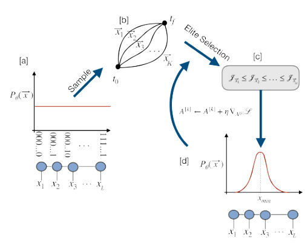

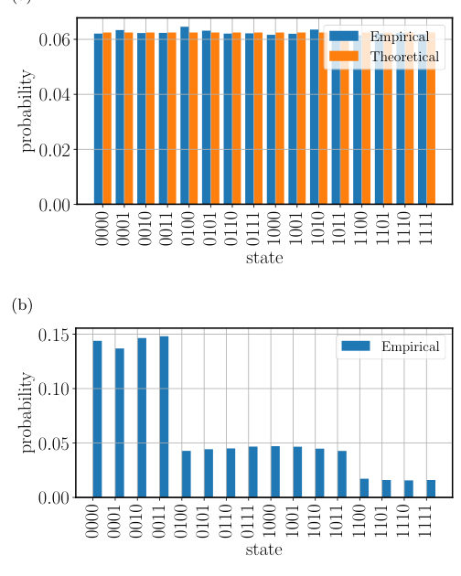
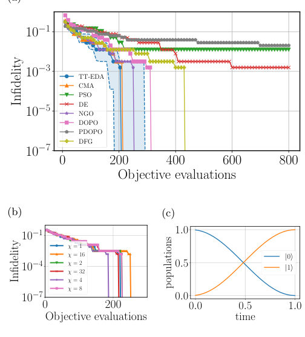
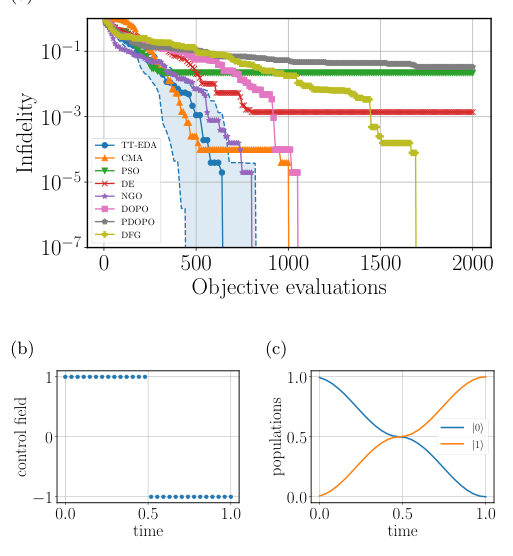
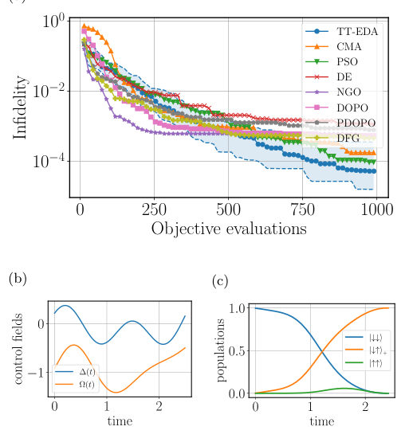
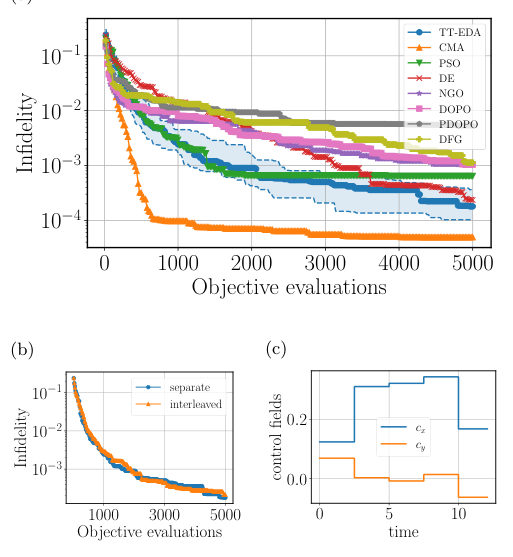
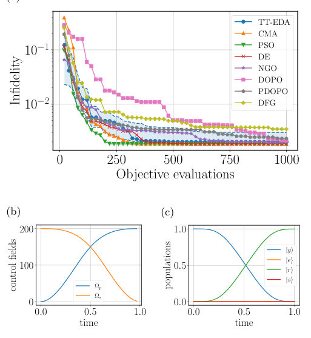
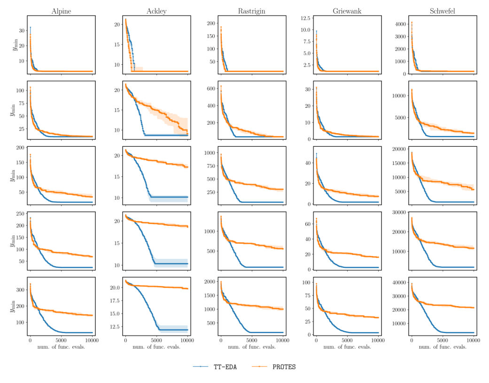
228 papers · 49 relevant · 5 highlighted
Every paper with at least one nonzero topic score, sorted by best-matching score. 🔥 marks scores ≥4/5. Click the title to jump to the full entry below; click [arXiv] to open the paper page. (secondary) marks papers from de-prioritized cond-mat archives.
analog quantum simulation 5/5 · 🔥 exotic spin models in light-matter 4/5 · 🔥 non-equilibrium dynamics 4/5 · entanglement & information structure 3/5 · QC/QI experiment 2/5 · non-equilibrium universality 2/5 · quantum measurements 2/5free-space correlated emission 5/5 · 🔥 Dicke superradiance 4/5 · 🔥 correlated / nonlocal dissipation 4/5 · methods for driven-dissipative 2/5 · non-equilibrium universality 2/5quantum optics experiment 5/5 · 🔥 QC/QI experiment 4/5 · interference shaping light 3/5 · entanglement & information structure 2/5 · quantum measurements 2/5spintronics-quantum-optics interface 5/5 · 🔥 entanglement & information structure 4/5 · Tavis-Cummings & cavity-many-emitter 2/5 · correlated / nonlocal dissipation 2/5QC/QI experiment 5/5 · 🔥 entanglement & information structure 4/5 · quantum measurements 2/5scars & prethermalization 5/5 · entanglement & information structure 3/5 · non-equilibrium dynamics 3/5measurement-induced transitions 4/5 · 🔥 quantum measurements 4/5 · driven-dissipative phase transition 3/5 · non-equilibrium universality 3/5 · Keldysh / 2PI / non-Gaussian methods 2/5 · entanglement & information structure 2/5 · methods for driven-dissipative 2/5 · non-equilibrium dynamics 2/5correlated cavity matter 4/5 · 🔥 entanglement & information structure 4/5 · Keldysh / 2PI / non-Gaussian methods 3/5 · spintronics-quantum-optics interface 3/5 · Tavis-Cummings & cavity-many-emitter 2/5 · analog quantum simulation 2/5 · correlated / nonlocal dissipation 2/5 · exotic spin models in light-matter 2/5non-equilibrium dynamics 4/5 · Kondo & dissipative impurity 3/5 · analog quantum simulation 3/5 · entanglement & information structure 3/5 · Keldysh / 2PI / non-Gaussian methods 2/5 · non-equilibrium universality 2/5non-equilibrium universality 4/5 · Tavis-Cummings & cavity-many-emitter 3/5 · non-equilibrium dynamics 3/5 · analog quantum simulation 2/5 · correlated cavity matter 2/5 · entanglement & information structure 2/5entanglement & information structure 4/5 · 🔥 non-equilibrium dynamics 4/5 · non-equilibrium universality 3/5 · scars & prethermalization 3/5methods for driven-dissipative 4/5 · driven-dissipative phase transition 3/5 · non-equilibrium dynamics 3/5 · correlated / nonlocal dissipation 2/5 · entanglement & information structure 2/5(secondary) — 🔥 quantum optics experiment 4/5 · correlated cavity matter 3/5 · QC/QI experiment 2/5 · Tavis-Cummings & cavity-many-emitter 2/5 · analog quantum simulation 2/5non-equilibrium dynamics 4/5 · methods for driven-dissipative 3/5 · Keldysh / 2PI / non-Gaussian methods 2/5 · driven-dissipative phase transition 2/5 · non-equilibrium universality 2/5correlated / nonlocal dissipation 4/5 · quantum measurements 3/5 · Tavis-Cummings & cavity-many-emitter 2/5 · entanglement & information structure 2/5 · methods for driven-dissipative 2/5Kondo & dissipative impurity 4/5 · 🔥 methods for driven-dissipative 4/5 · non-equilibrium dynamics 3/5 · Keldysh / 2PI / non-Gaussian methods 2/5non-equilibrium dynamics 4/5 · analog quantum simulation 3/5 · methods for driven-dissipative 3/5 · driven-dissipative phase transition 2/5QC/QI experiment 4/5 · 🔥 quantum optics experiment 4/5 · interference shaping light 2/5 · spintronics-quantum-optics interface 2/5quantum measurements 4/5 · correlated / nonlocal dissipation 2/5 · entanglement & information structure 2/5 · methods for driven-dissipative 2/5 · non-equilibrium dynamics 2/5correlated / nonlocal dissipation 4/5 · methods for driven-dissipative 3/5 · entanglement & information structure 2/5 · non-equilibrium dynamics 2/5non-equilibrium dynamics 4/5 · methods for driven-dissipative 3/5 · driven-dissipative phase transition 2/5 · entanglement & information structure 2/5entanglement & information structure 4/5 · 🔥 non-equilibrium dynamics 4/5 · driven-dissipative phase transition 2/5analog quantum simulation 4/5 · 🔥 non-equilibrium dynamics 4/5 · exotic spin models in light-matter 2/5(secondary) — 🔥 QC/QI experiment 4/5 · 🔥 quantum optics experiment 4/5 · interference shaping light 2/5non-equilibrium dynamics 4/5 · non-equilibrium universality 3/5 · Keldysh / 2PI / non-Gaussian methods 2/5correlated / nonlocal dissipation 4/5 · non-equilibrium dynamics 3/5 · methods for driven-dissipative 2/5entanglement & information structure 4/5 · non-equilibrium dynamics 3/5 · spintronics-quantum-optics interface 2/5quantum measurements 4/5 · methods for driven-dissipative 3/5 · non-equilibrium dynamics 2/5quantum optics experiment 4/5 · QC/QI experiment 3/5 · quantum measurements 2/5QC/QI experiment 4/5 · 🔥 quantum optics experiment 4/5entanglement & information structure 4/5 · methods for driven-dissipative 2/5 · quantum measurements 2/5quantum measurements 4/5 · entanglement & information structure 2/5 · non-equilibrium dynamics 1/5entanglement & information structure 4/5 · non-equilibrium dynamics 2/5QC/QI experiment 4/5 · spintronics-quantum-optics interface 2/5QC/QI experiment 4/5 · methods for driven-dissipative 2/5interference shaping light 4/5 · quantum measurements 2/5entanglement & information structure 4/5 · quantum measurements 2/5quantum measurements 4/5 · methods for driven-dissipative 2/5scars & prethermalization 4/5 · non-equilibrium dynamics 2/5interference shaping light 4/5 · non-equilibrium dynamics 2/5analog quantum simulation 4/5 · non-equilibrium dynamics 2/5QC/QI experiment 4/5 · quantum measurements 1/5QC/QI experiment 4/5 · quantum measurements 1/5methods for driven-dissipative 4/5QC/QI experiment 4/5QC/QI experiment 4/5QC/QI experiment 4/5QC/QI experiment 4/5entanglement & information structure 4/5Papers by authors on your watch list. Click the title to jump to the full entry below; click [arXiv] to open the paper page.
Papers from quant-ph and your primary cond-mat archives (quant-gas, stat-mech, str-el, dis-nn). Highlighted papers (⭐) come first, then everything else sorted by topic-relevance score, highest first.
← Index · ← Previous · Next →
Authors: Yangfan He, Chenhao Pan, Bin Zhang, Yiming Pan
Type: both · Category: other · PDF: https://arxiv.org/pdf/2604.23569v1
Analysis basis: full PDF text, analyzed in chunks
Topic relevance: 🔥 interference shaping light 4/5 · non-equilibrium dynamics 2/5
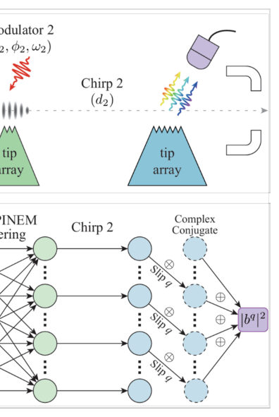
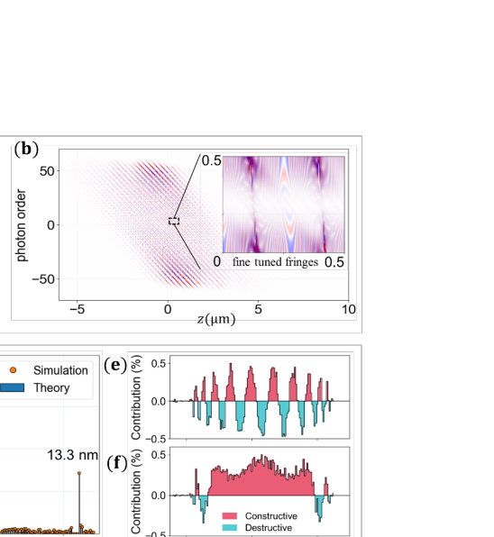
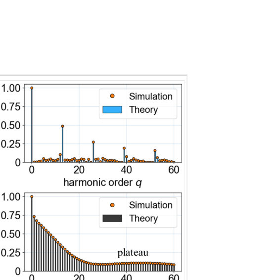
Main problem. The need for compact, coherent, and tunable sources of EUV and X-ray radiation, specifically addressing the lack of selectivity and efficiency in existing PINEM-based high-harmonic generation.
Main result. The development of a Quantum Echo-Enabled High-Harmonic Generation (QEEHG) scheme that uses quantum interference to selectively enhance specific harmonic orders while suppressing others.
Method. A theoretical framework using a multi-path quantum interferometer approach and numerical simulations via a quantum wavepacket evolution algorithm (FFPG) to model electron-laser interactions.
Summary. This paper proposes a new method called Quantum Echo-Enabled High-Harmonic Generation (QEEHG) to create tunable, coherent X-ray and EUV radiation. By using a sequence of laser modulations and dispersive drift sections, the researchers show how to manipulate the quantum phase of electron wavepackets. This allows for the selective enhancement of specific high-order harmonics through constructive interference while suppressing unwanted radiation. The technique provides a promising path toward compact, high-brightness radiation sources for electron microscopy and diffraction.
Model / system. An ultrafast electron beamline interacting with two optical modulation stages and two dispersive drift (chirp) sections, modeled using a time-dependent Schrödinger equation with momentum-dependent chirping and position-dependent modulation operators.
Key observables. The q-th harmonic bunching factor b(q), the Wigner distribution of the electron wavepacket, and the harmonic spectrum amplitude.
Important parameters / regimes. Modulation strengths (g1, g2), laser frequencies (omega1, omega2), chirping coefficients (xi), drift lengths (d0, df), and the large recoil condition.
Assumptions / limitations. The interaction time is much shorter than the free-drift times (impulsive limit), the laser field is co-propagating, and the large recoil condition (momentum kick much larger than momentum spread) is assumed for analytical derivation.
Figures summary. Figure 1 shows the QEEHG setup and quantum interference network; Figure 2 displays the harmonic spectrum, Wigner distribution, and path selection maps; Figure 3 illustrates the optimization of global phase conditions and tailored spectra (periodic and plateau regimes).
Paper structure. The paper introduces the scientific problem of radiation source development, presents the proposed QEEHG scheme and its physical components, derives the mathematical operator-based framework for electron wavepacket evolution, provides numerical validation and optimization protocols, and concludes with the demonstration of spectrally tailored harmonic outputs.
Why it may be interesting. The paper presents a sophisticated application of quantum interference and wavepacket shaping, using a 'quantum echo' to control the interference of multiple quantum pathways, which is highly relevant to the control of coherent states in quantum optics.
Controlling and generating ultrafast free-electron wavepackets via laser is pivotal for photon-induced near-field electron microscopes (PINEM) and also for developing compact, coherent free-electron radiation sources. Here, we present a quantum echo-enabled high-harmonic generation (QEEHG) scheme that manipulates the quantum phase of electron wavepackets to produce tunable, coherent high-harmonic radiation at ultrashort wavelengths. This framework, inspired by the EEHG concept for free-electron lasers by Stupikov et al. (2009), leverages multiphoton PINEM scattering followed by dispersive chirp sections to induce quantum interference among photon sidebands. Such interference selectively enhances a targeted harmonic order - for instance, the 60th harmonic at 13.3nm from an 800nm seeding - while suppressing unwanted radiations. The optimization of harmonic orders and its non-classical spectral characteristics are analyzed. This quantum echo technique establishes a promising paradigm for compact coherent sources and provides new perspectives for quantum wavefunction shaping in ultrafast electron microscopy and diffraction.
Authors: Tianyi Xu, Qinglong Liu, Maolin Wang, Fei Zhang, Zhe Zhao, Yang Wang, Ye Wei
Type: both · Category: quantum information and computing · PDF: https://arxiv.org/pdf/2604.24640v1
Analysis basis: full PDF text, analyzed in chunks
Topic relevance: 🔥 QC/QI experiment 4/5 · quantum measurements 1/5
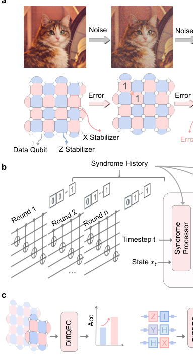
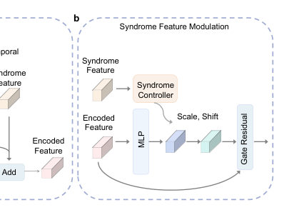
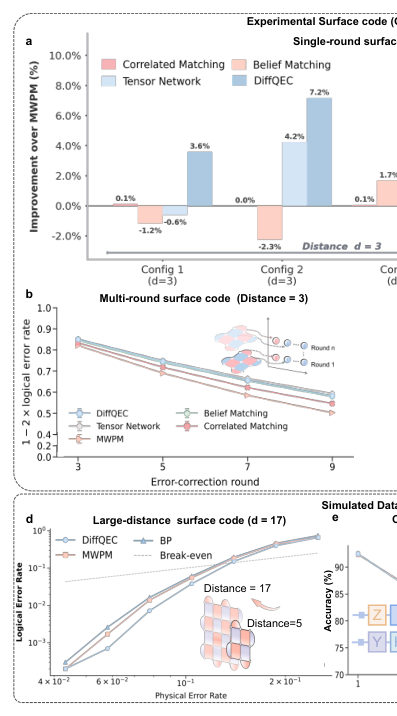
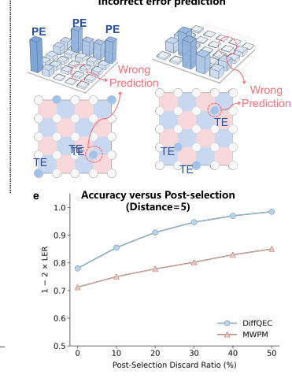
Main problem. The challenge of decoding quantum error correction (QEC) by inferring physical error configurations from syndrome patterns, specifically addressing the loss of uncertainty information in existing point-estimation decoders.
Main result. DiffQEC reduces logical error rates by up to 10.2% relative to MWPM and 5% relative to tensor-network decoding on Google's Sycamore processor, while providing useful posterior distributions for post-selection and error analysis.
Method. A generative decoder using discrete denoising diffusion probabilistic models that treats decoding as an iterative process of refining error hypotheses conditioned on syndrome history.
Summary. This paper introduces DiffQEC, a generative decoder for quantum error correction based on discrete denoising diffusion models. Unlike traditional decoders that provide a single error hypothesis, DiffQEC learns the full posterior distribution of errors. When tested on Google's Sycamore hardware, it significantly outperforms standard decoders like MWPM and provides actionable uncertainty estimates for error post-selection. The model scales well to large code distances and maintains efficiency suitable for real-time applications.
Model / system. The study uses Google's Sycamore superconducting quantum processor data (rotated surface codes) and simulated depolarizing noise for scalability tests up to distance d=17.
Key observables. Logical error rate (LER), posterior distribution of errors, decoding latency, and saliency maps for error attribution.
Important parameters / regimes. Code distances (d=3, 5, up to 17), circuit depth (1 to 5), and error models (hardware-specific and depolarizing noise).
Assumptions / limitations. Assumes that simulated noise at large distances can sufficiently represent real hardware-specific error mechanisms for scalability testing.
Figures summary. Fig 1 shows the diffusion-error analogy and pipeline; Fig 2 details the 3D syndrome processor and modulation architecture; Fig 3 presents performance benchmarks (LER reduction, latency, and scalability); Fig 4 demonstrates error analysis via saliency maps and post-selection utility.
Paper structure. The paper introduces the decoding problem and the diffusion analogy, details the DiffQEC architecture (syndrome processor and modulation), presents performance benchmarks on experimental and simulated data, and concludes with error analysis and utility for post-selection.
Quantum computers could solve problems beyond the reach of classical devices, but this potential depends on quantum error correction (QEC) to protect fragile quantum states from noise. A central challenge in QEC is decoding: inferring likely physical errors from syndrome patterns generated by repeated stabilizer measurements. Existing decoders, including graph-based and neural approaches, typically return a single correction hypothesis and therefore discard the richer posterior structure of the error distribution conditioned on the observed syndrome. Here we recast QEC decoding as posterior inference using discrete denoising diffusion, exploiting the analogy between stochastic error accumulation and the forward diffusion process. We introduce DiffQEC, a generative decoder that combines a syndrome processor for multi-round spatial-temporal syndrome histories with syndrome feature modulation to condition denoising on the observed syndrome throughout inference. On experimental data from Google's superconducting quantum processor, DiffQEC reduces logical error rates by up to 10.2% relative to minimum-weight perfect matching and by about 5% relative to tensor-network decoding. These improvements persist for larger code distances up to 17 under depolarizing noise and for logical circuits of increasing depth. Beyond accuracy, the learned posterior provides confidence estimates for post-selection and reveals physically meaningful error structure, establishing posterior generative decoding as a practical framework for QEC.
Authors: Francisco Chinesta, Antonio Falco, Daniela Falco-Pomares
Type: both · Category: quantum information and computing · PDF: https://arxiv.org/pdf/2604.24289v1
Analysis basis: full PDF text, analyzed in chunks
Topic relevance: 🔥 QC/QI experiment 4/5 · quantum measurements 1/5
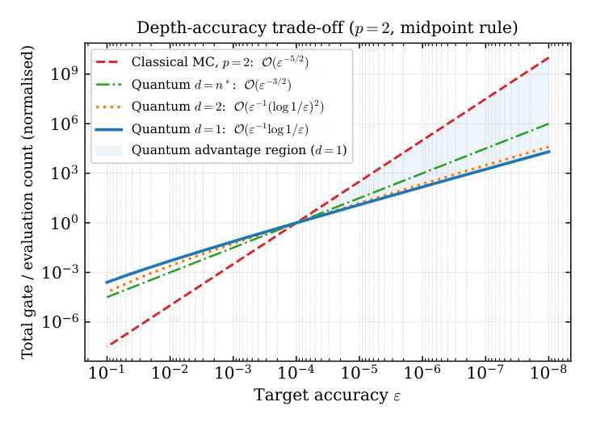
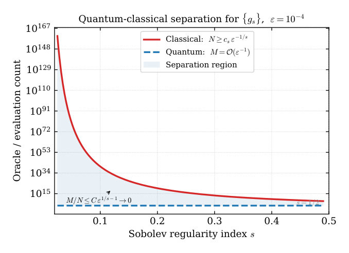
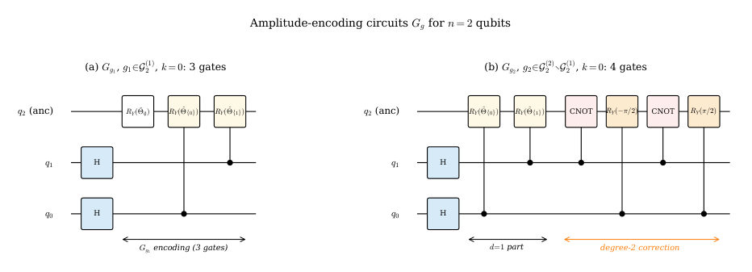
Main problem. Determining whether the theoretical quadratic speedup of Quantum Amplitude Estimation (QAE) for numerical integration is preserved when the computational cost of constructing the amplitude oracle (state preparation) is included.
Main result. The authors introduce an angle-structure hierarchy of function classes where the gate count scales with the multilinear degree d, proving that for d=1, quantum integration can asymptotically outperform classical Monte Carlo and achieve a quantum-classical separation for certain Sobolev-regular functions.
Method. The study uses a multilinear expansion of the angle map via the Walsh-Hadamard Transform to decompose the encoding operator into multi-controlled RY gates, combined with Maximum Likelihood Amplitude Estimation (MLAE) for error analysis.
Summary. This paper addresses a critical bottleneck in quantum numerical integration: the cost of preparing the quantum state representing the integrand. By classifying functions based on the multilinear degree of their 'angle map,' the authors show that certain classes of functions allow for highly efficient quantum circuits. They demonstrate a clear quantum advantage over classical methods for specific function regularities and validate these findings using both NMR and superconducting quantum hardware.
Model / system. The framework uses Quantum Amplitude Estimation applied to numerical integration on the interval [0, 1], with experimental validation performed on the SpinQ Triangulum (3-qubit NMR processor) and IBM Kingston (127-qubit superconducting processor).
Key observables. The encoded amplitude (Riemann sum), ancilla qubit measurement probabilities (pk), and the target integration accuracy (epsilon).
Important parameters / regimes. Multilinear degree (d), Sobolev regularity (s), target accuracy (epsilon), number of qubits (n), and quadrature order (p).
Assumptions / limitations. The analysis assumes the cost of building the oracle is a structural component of the total complexity, rather than treating it as a black box; it also assumes the multilinear degree is the primary driver of circuit depth.
Figures summary. Figure 1 shows a log-log plot of the depth-versus-accuracy trade-off highlighting the quantum advantage region; Figure 2 illustrates the quantum-classical separation gap; Figure 3 depicts the amplitude-encoding circuits for n=2; and Figure 4/5 show hardware-specific performance and probability comparisons.
Paper structure. The paper introduces the problem of oracle complexity, defines the angle-structure hierarchy and its multilinear expansion, establishes the encoding-circuit theorem and depth-accuracy trade-offs, proves quantum-classical separation for specific function classes, and concludes with experimental validation on NMR and superconducting hardware.
We study numerical integration on $[0,1]$ by quantum amplitude estimation (QAE), focusing on the cost of constructing the amplitude oracle. Although QAE improves the statistical component of the integration error, this advantage is relevant only when the integrand has low encoding complexity. We introduce a hierarchy of grid function classes $\mathcal{G}_n^{(d)}$, defined by requiring the angle map $Θ_g:\{0,1\}^n\to[0,π]$ to be multilinear of degree at most $d$. Membership is classically checkable in $O(n2^n)$ time by the Walsh--Hadamard transform. For $g\in\mathcal{G}_n^{(d)}$, the encoding operator factorises into $\sum_{k=0}^d\binom{n}{k}$ multi-controlled $R_Y$ gates, interpolating between an affine $O(n)$ regime and the generic exponential regime. Combining this structure with classical discretisation estimates for $g\in C^α[0,1]$, we obtain a depth-versus-accuracy trade-off: gate count $O((\log(1/\varepsilon))^d\varepsilon^{-1})$ suffices to achieve $\varepsilon$-accuracy with constant probability. For $d=1$ this becomes $O(\varepsilon^{-1}\log(1/\varepsilon))$, improving over classical Monte Carlo for every $α\ge1$. We also prove an unconditional separation: $\mathcal{G}_n^{(1)}$ contains functions of Sobolev regularity $s<1/2$ for which the quantum oracle cost is $O(1/\varepsilon)$, whereas classical deterministic or randomised quadrature requires $Ω(\varepsilon^{-1/s})$ evaluations. These results identify explicit integrand classes for which the full cost of QAE-based integration, including state preparation, is asymptotically better than classical methods. Experiments on SpinQ Triangulum and IBM Kingston illustrate the hierarchy at $n=2$: circuits inside $\mathcal{G}_n^{(d)}$ run successfully, while those exceeding the Triangulum coherence budget fail as predicted.
Authors: Zeki Zeybek, Rick Mukherjee, Peter Schmelcher
Type: theory · Category: numerical methods · PDF: https://arxiv.org/pdf/2604.24467v1
Analysis basis: full PDF text, analyzed in chunks
Topic relevance: 🔥 methods for driven-dissipative 4/5








Main problem. Efficiently navigating high-dimensional, non-convex optimization landscapes in Quantum Optimal Control (QOC) to avoid the curse of dimensionality and the limitations of existing gradient-based and gradient-free methods.
Main result. The proposed TT-EDA method exhibits stable convergence and competitive performance against established gradient-free baselines, showing particular advantages in high-dimensional regimes.
Method. A gradient-free sampling heuristic called TT-EDA that uses a Matrix Product State (MPS/Tensor Train) to define an unnormalized score function over discrete control parameters, which is iteratively updated via gradient ascent on the log-scores of elite samples.
Summary. This paper presents TT-EDA, a new optimization heuristic for quantum optimal control that uses Tensor Trains to represent and sample from control parameter distributions. By using a Matrix Product State to define a score function, the method efficiently searches high-dimensional, non-convex landscapes. The authors demonstrate that the method can successfully recover complex control structures, such as 'bang-bang' pulses and STIRAP protocols, with performance comparable to or better than existing gradient-free algorithms. It is particularly effective at scaling to higher-dimensional control problems.
Model / system. The method is tested on various benchmarks including single-qubit state transfer, Bell-pair preparation in coupled spin systems, qutrit gate implementation, and population transfer in three-level open quantum systems governed by the Lindblad master equation.
Key observables. Fidelity, infidelity, and population dynamics.
Important parameters / regimes. Bond dimension (chi), number of time steps (L), number of amplitude levels (d), learning rate (eta), and the lambda parameter for controlling the exploration-exploitation tradeoff.
Assumptions / limitations. The method is specifically designed for discrete control parameter spaces and relies on the ability of the Tensor Train to provide a compressed representation of the control space; it also assumes a discretization of continuous control fields.
Figures summary. Figure 1 shows the TT-EDA optimization loop; Figure 2 illustrates the MPS sampling and update mechanism; Figure 3 and 4 show convergence and pulse profiles for single-qubit tasks; Figure 7 displays convergence and STIRAP-like dynamics for open systems; Figure 8 compares scaling behavior across different dimensions.
Paper structure. The paper introduces the TT-EDA algorithm, describes the MPS-based sampling and update mechanism, presents benchmarks across various quantum control tasks (single-qubit, Bell-pair, qutrit, and open systems), evaluates performance against standard optimizers, and analyzes the exploration-exploitation tradeoff using high-dimensional benchmark functions.
Why it may be interesting. It introduces a novel way to use tensor networks not just for simulating many-body states, but as a generative tool for optimizing complex control pulses in open and multi-level quantum systems.
Quantum optimal control (QOC) provides a systematic framework for achieving high-fidelity operations in quantum systems and plays a central role in tasks such as gate synthesis, state transfer, and pulse design. Existing QOC methods broadly fall into two categories: gradient-based and gradient-free algorithms. The associated optimization landscape is often high-dimensional, non-convex, and populated by numerous local minima, making efficient gradient-free search strategies essential. To address this, we introduce a gradient-free matrix product state/tensor train (MPS/TT) sampling heuristic for discrete quantum optimal control. In our approach, the MPS defines a score function over the space of discrete control parameters, which in turn induces a sampling distribution over candidate control sequences. This distribution is iteratively refined through selection of better performing sequences and local tensor updates to bias the search toward high-performing sequences. We evaluate the method on a range of benchmark problems, including single-qubit state transfer, Bell-pair preparation, qutrit gate implementation, and open-system population transfer. Across these tasks, the method exhibits stable convergence behavior and competitive empirical performance relative to established gradient-free baselines. These results suggest that tensor network sampling offers a viable heuristic framework for discrete quantum control.
Authors: Monit Sharma, Hoong Chuin Lau
Type: both · Category: quantum information and computing · PDF: https://arxiv.org/pdf/2604.24283v1
Analysis basis: full PDF text, analyzed in chunks
Topic relevance: 🔥 QC/QI experiment 4/5
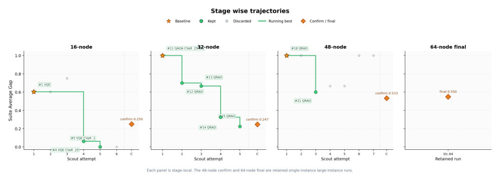
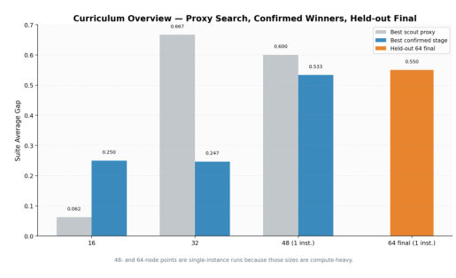
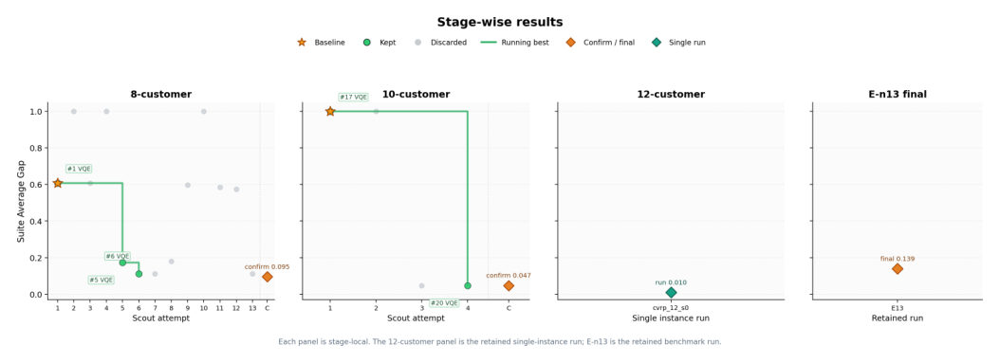
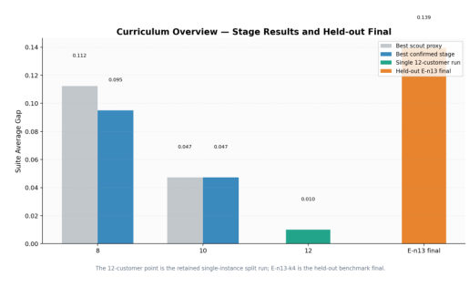
Main problem. The difficulty of manually configuring variational quantum algorithms (VQAs) for combinatorial optimization, which requires coordinating complex, interacting design choices like ansatz, optimizer, and objective.
Main result. The AutoQResearch framework successfully discovers adaptive, scale-dependent solver policies that outperform static baselines on MIS and CVRP problems, with validation on real IBM quantum hardware.
Method. An LLM-guided closed-loop experimentation framework using a 'scout-promote-confirm' protocol to perform sequential policy search over a curated design space.
Summary. This paper introduces AutoQResearch, an automated framework that uses Large Language Models to discover optimal configurations for variational quantum algorithms. Instead of just tuning hyperparameters, the system learns adaptive policies that change solver settings based on real-time performance diagnostics. The researchers demonstrated that the agent can discover complex, scale-dependent strategies for solving combinatorial optimization problems. Crucially, the discovered policies were validated on real IBM quantum hardware, proving they are not just simulation artifacts.
Model / system. The framework is applied to combinatorial optimization problems, specifically the Maximum Independent Set (MIS) and the Capacitated Vehicle Routing Problem (CVRP), using VQA families such as QAOA, VQE, and QRAO on IBM quantum processors.
Key observables. Optimality gap, feasibility rate, convergence stagnation, sampling concentration, and hardware-specific metrics like gate counts and depth.
Important parameters / regimes. Problem scales (16 to 64 nodes for MIS), CVaR parameter (alpha), sampling budgets, penalty coefficients, and qubit compression ratios.
Assumptions / limitations. The design problem can be modeled as a sequential decision process, and the LLM's search is restricted to a curated, auditable design space to prevent overfitting.
Figures summary. Figure 1 shows stage-wise search trajectories; Figure 2 illustrates the discrepancy between cheap proxy (scout) evaluations and confirmed results; Figure 3 shows stage-wise CVRP performance.
Paper structure. The paper introduces the AutoQResearch framework, details the LLM-guided sequential policy search and evaluation protocol, presents case studies on MIS and CVRP, validates results on real IBM hardware, and discusses methodological findings regarding proxy reliability.
Configuring variational quantum algorithms for combinatorial optimization remains a difficult, expert-driven process requiring coordinated choices over solver family, ansatz, objective, and optimizer. We present AutoQResearch, an LLM-guided closed-loop experimentation framework that casts this task as sequential policy search over a curated design space. Instead of a single static configuration, the framework searches for adaptive solver-control policies that condition future decisions on diagnostics such as feasibility, optimality gap, and convergence stagnation. The system operates through a structured workflow: an LLM agent edits a small policy surface under a fixed evaluation harness, candidate policies are screened using cheap scout evaluations, and only the strongest candidates are promoted to full confirmation. This enables controlled autonomous exploration while guarding against proxy overfitting and unstable selection. We evaluate the framework on Maximum Independent Set (MIS) and the Capacitated Vehicle Routing Problem (CVRP). On MIS instances (16--64 vertices), discovered policies substantially outperform static baselines and reveal scale-dependent behavior: CVaR objectives are effective at small scale, while QRAO-based qubit compression provides the most effective explored scaling path. On CVRP curricula (8--12 customers) and a held-out E-n13-k4 benchmark, the framework discovers adaptations involving sampling budget, penalty design, and hybrid repair protocols, yielding high-quality solutions. Methodologically, we find that staged confirmation is essential: cheap proxy evaluations can materially misestimate policy quality and even invert candidate rankings. Overall, the paper positions AutoQResearch as a benchmarked quantum--GenAI co-design workflow for autonomous solver discovery in variational quantum optimization.
Authors: Tihomir G. Tenev, Nayden P. Nedev, Nikolay V. Vitanov
Type: experiment · Category: quantum information and computing · PDF: https://arxiv.org/pdf/2604.23228v1
Analysis basis: full PDF text, analyzed in chunks
Topic relevance: 🔥 QC/QI experiment 4/5
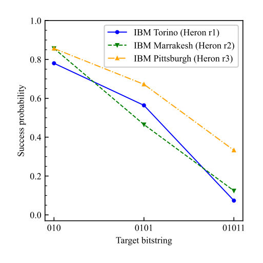
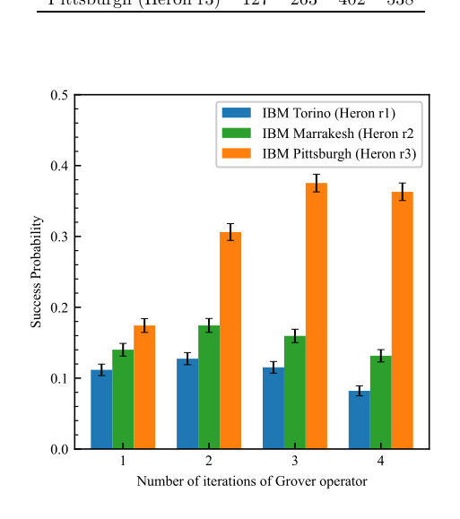
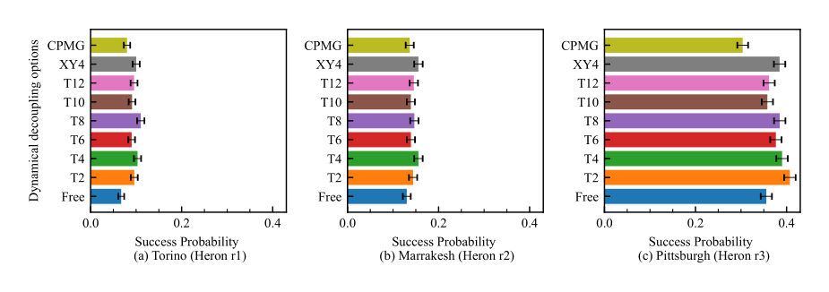
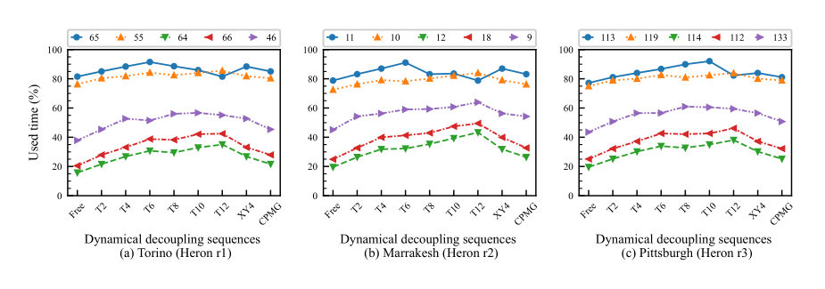
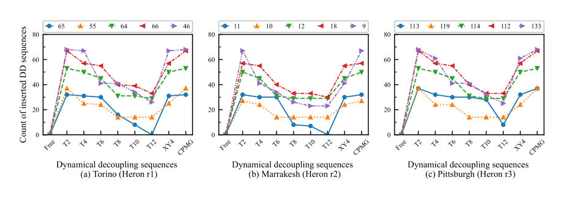
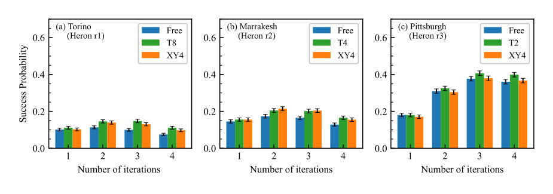
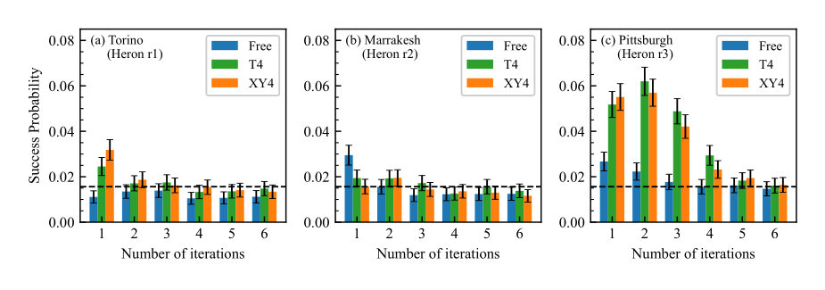
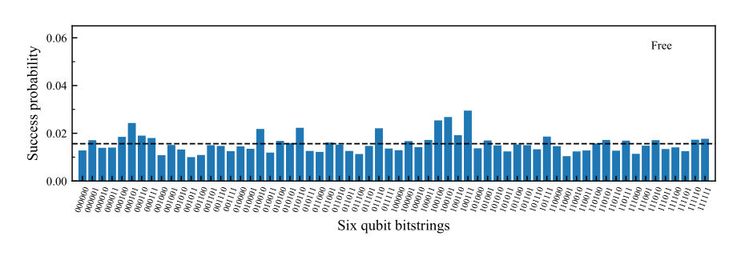
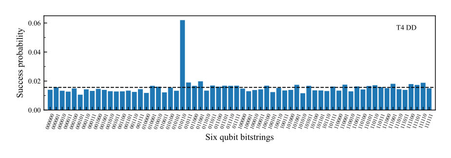
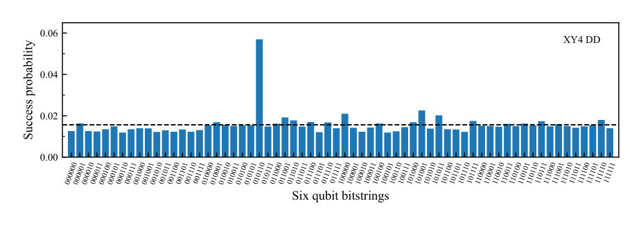
Main problem. Evaluating the performance of Grover's algorithm across three generations of IBM Heron family QPUs and assessing the effectiveness of topological dynamical decoupling (DD) in improving success probabilities.
Main result. Newer IBM Heron generations show higher success probabilities than previous generations, and topological DD sequences (specifically T4) significantly improve the ability to distinguish the target bitstring from noise in 6-qubit implementations.
Method. Implementation of Grover's algorithm using Qiskit on IBM Heron QPUs, comparing 'free' runs against various DD sequences (CPMG, XY4, and topological Tn) to mitigate decoherence and gate errors.
Summary. This paper investigates how Grover's algorithm performs on the latest generations of IBM's Heron-family superconducting quantum processors. The researchers found that newer hardware significantly outperforms previous generations even without error mitigation. Furthermore, they demonstrate that using topological dynamical decoupling sequences can effectively suppress errors, allowing for successful search results in 6-qubit circuits where the target bitstring would otherwise be lost to noise.
Model / system. Three generations of IBM Heron family superconducting QPUs: Torino (r1), Marrakesh (r2), and Pittsburgh (r3), featuring a star topology.
Key observables. Success probability of the Grover algorithm, number of iterations, and calibration metrics including T1, T2, readout error, and 2Q gate error.
Important parameters / regimes. Qubit register sizes (3 to 6 qubits), number of Grover operator iterations, and pulse counts in DD sequences.
Assumptions / limitations. The study assumes that the primary source of error in the algorithm performance is decoherence and gate errors that can be addressed via dynamical decoupling rather than measurement error mitigation.
Figures summary. Figure 1 shows success probabilities for 3-5 qubits across Heron generations; Figure 2 shows success probability vs. iterations for 5 qubits; Figure 3 compares different DD sequences; Figure 4 shows qubit gate load; Figures 8-10 demonstrate the impact of DD on finding the target bitstring in 6-qubit cases.
Paper structure. The paper introduces the problem of Grover performance on Heron QPUs, details the hardware generations and DD methods used, presents comparative results for 3-5 qubits, explores the scalability to 6 qubits with DD, and concludes with the effectiveness of topological DD.
We investigate the performance of Grover's algorithm on three different generations of IBM Heron QPUs. On Heron family of IBM QPUs the success probabilities for three, four and five qubits without dynamical decoupling is better than results reported for previous generations of QPUs. The success probability as function of number of iterations of Grover operator is considered. A study of the improvement of results of Grover's algorithm for five qubit case with the help of topological dynamical decoupling is considered. For a six qubit case on Heron r3 QPU a clear result for finding the sought-after bitstring is reported for theoretically suboptimal number of iterations of Grover operator with the help of dynamical decoupling.
Authors: Andriy Miranskyy, Adam Sorrenti, Jasmine Thind, Claude Gravel
Type: both · Category: quantum information and computing · PDF: https://arxiv.org/pdf/2604.24475v1
Analysis basis: full PDF text, analyzed in chunks
Topic relevance: 🔥 QC/QI experiment 4/5
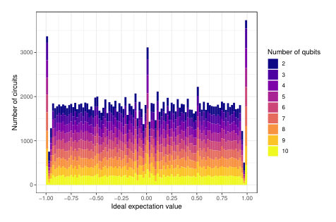
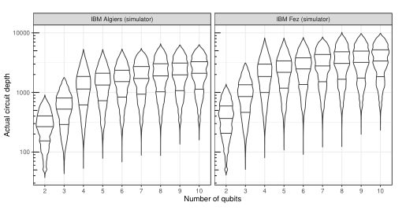
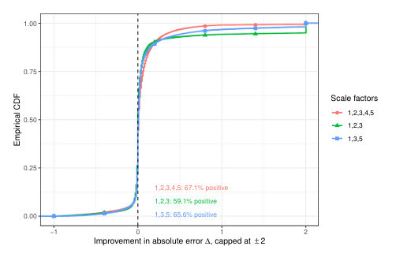
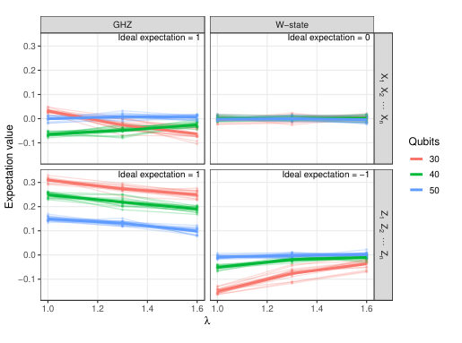
Main problem. Standard Zero-Noise Extrapolation (ZNE) models often produce unphysical predictions (e.g., expectation values outside the [-1, 1] range) and suffer from numerical instability in high-noise regimes.
Main result. Introducing physically bounded extrapolation models significantly improves the stability and accuracy of exponential and polynomial-exponential models, effectively eliminating unphysical predictions and reducing error on both simulated and real IBM hardware.
Method. The authors reparameterize polynomial, exponential, and hybrid models to explicitly constrain the zero-noise estimate within valid physical bounds during the optimization process using the L-BFGS-B algorithm.
Summary. This paper addresses a critical flaw in quantum error mitigation where standard extrapolation techniques produce mathematically impossible results. By enforcing physical constraints (like the [-1, 1] bound for Pauli observables) directly into the fitting optimization, the authors create more robust models. Their approach significantly stabilizes exponential-family models and provides more reliable error mitigation on real NISQ hardware. The method is computationally efficient and can be integrated into existing quantum error mitigation workflows with minimal changes.
Model / system. The study evaluates ZNE performance using a large-scale synthetic benchmark (180,000 circuits) based on IBM Falcon and Heron noise models, alongside hardware experiments on the IBM Kingston processor using GHZ and W-state circuits.
Key observables. Expectation values of Pauli operators (e.g., Z and X strings).
Important parameters / regimes. Noise scale factor (lambda), circuit depth, qubit count (up to 50), and polynomial degree.
Assumptions / limitations. The study assumes that the physical bounds of observables are known and that the noise can be scaled via gate folding; it also notes that simulations may be more optimistic than real hardware due to simplified noise models.
Figures summary. Figure 1 shows the distribution of ideal expectation values; Figure 2 shows the distribution of circuit depths; Figure 3 shows the empirical CDF of error improvement; Figure 4 shows expectation values as a function of the noise scale factor.
Paper structure. The paper identifies the problem of unconstrained ZNE, introduces the mathematical formulation for bounded model variants, presents a large-scale synthetic benchmarking study, validates the approach on real IBM quantum hardware, and discusses limitations and future directions.
Zero-noise extrapolation (ZNE) mitigates errors in near-term quantum devices by extrapolating measurements obtained at amplified noise levels to estimate noise-free expectation values. In practice, commonly used extrapolation models are fitted without enforcing physical constraints, which can yield predictions outside the valid range of quantum observables. In this work, we introduce physically bounded variants of polynomial, exponential, and polynomial--exponential extrapolation models by explicitly parameterizing the zero-noise estimate and constraining it during optimization. We evaluate the approach using a large synthetic benchmark comprising 180,000 circuits and approximately 3.6 million ZNE experiments generated under realistic device noise models derived from IBM quantum backends. We also perform preliminary validation on real quantum hardware using GHZ and W-state circuits. Across the synthetic benchmark, bounded extrapolation substantially reduces unphysical predictions and improves the stability of exponential- and polynomial--exponential-family models, whereas polynomial models show little difference between bounded and unbounded variants. Hardware experiments show similar qualitative behaviour: bounded models generally avoid pathological extrapolations and often provide a more reliable balance between accuracy and usable coverage. At the same time, the results highlight practical limitations of current devices, including stronger-than-expected noise effects and variability not fully captured by simulation models. These results suggest that enforcing physical constraints during extrapolation improves the reliability of ZNE and that this approach can be incorporated into existing workflows with minimal modification.
Authors: Tristan Zaborniak, Vikram Khipple Mulligan
Type: both · Category: quantum information and computing · PDF: https://arxiv.org/pdf/2604.23819v1
Analysis basis: full PDF text, analyzed in chunks
Topic relevance: 🔥 QC/QI experiment 4/5
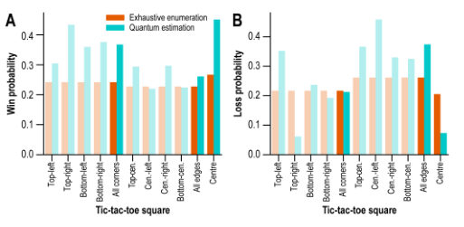
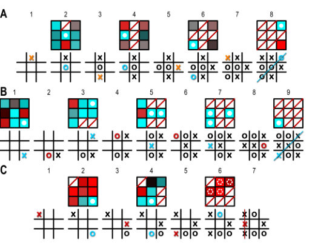
Main problem. Exploring whether quantum computers can play traditional competitive games by using superposition to implicitly represent all future game paths and sampling them to maximize win probability without hard-coded strategies.
Main result. Demonstrated a proof-of-principle implementation on a D-Wave quantum annealer playing Tic-Tac-Toe, achieving a 100% win rate against a random opponent when starting first.
Method. Encoding game rules and win conditions into a Hamiltonian using specialized logic gates (WNOT, WAND, PW) and using a classical outer loop to select moves based on the frequency of wins, losses, and draws in the quantum samples.
Summary. This paper presents a novel approach to quantum computing where game rules are encoded directly into a quantum annealer's Hamiltonian. By sampling the resulting state space, the system can evaluate the probability of future wins, losses, or draws without needing pre-learned strategies. Using Tic-Tac-Toe as a test case, the authors show that the D-Wave hardware can effectively play against humans. This work establishes game-playing as a potential real-world benchmark for evaluating quantum hardware performance.
Model / system. The D-Wave Advantage 2 quantum annealer, where game mechanics are mapped to a QUBO-style Hamiltonian using biases and couplings to represent move registers and win conditions.
Key observables. Counts of future game paths leading to wins, losses, and draws (n_win, n_loss, n_draw) and the estimated proxy probability of winning for each move.
Important parameters / regimes. Penalty values for logic gates (AND, OR, WNOT, etc.), number of samples per move (75,000 total), and the scaling of logical/physical qubits as the game progresses.
Assumptions / limitations. The algorithm assumes a 'minimally strategic' opponent that always takes an immediate win if available, and it assumes the proxy probability from sampling is sufficient for decision-making.
Figures summary. Figure 1 compares quantum win probability estimates against classical exhaustive enumeration; Figure 2 illustrates specific game scenarios including exploiting mistakes, non-optimal paths, and losses due to lack of draw-prioritization.
Paper structure. The paper introduces the concept of quantum game-playing, details the Hamiltonian construction via logic gates, describes the sampling and decision-making algorithm, presents experimental results on D-Wave hardware, and discusses limitations and future scaling.
The challenge of programming classical computers to play traditional, competitive games against human players has helped to advance classical hardware and software. Quantum computers have the potential to play games in a unique way: programmed only with the rules of a game, they should be able to implicitly represent all future paths of a game leading to wins, losses, or draws, and sample from this path set to identify moves that maximize the likelihood of a win. This permits skilled play without hard-coded or machine-learned strategy. As a proof of principle, we present early results obtained after programming the D-Wave quantum annealer with the rules of tic-tac-toe, enabling it to play against a human opponent. We anticipate that, as it has for classical computers, game-playing will serve as an important real-world benchmark for quantum computers.
Authors: Sandeep Sharma, Ajit C. Balram
Type: theory · Category: strongly correlated electrons · PDF: https://arxiv.org/pdf/2604.24058v1
Analysis basis: full PDF text, analyzed in chunks
Topic relevance: 🔥 entanglement & information structure 4/5
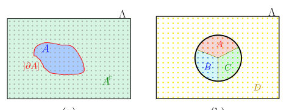
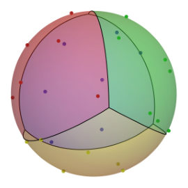
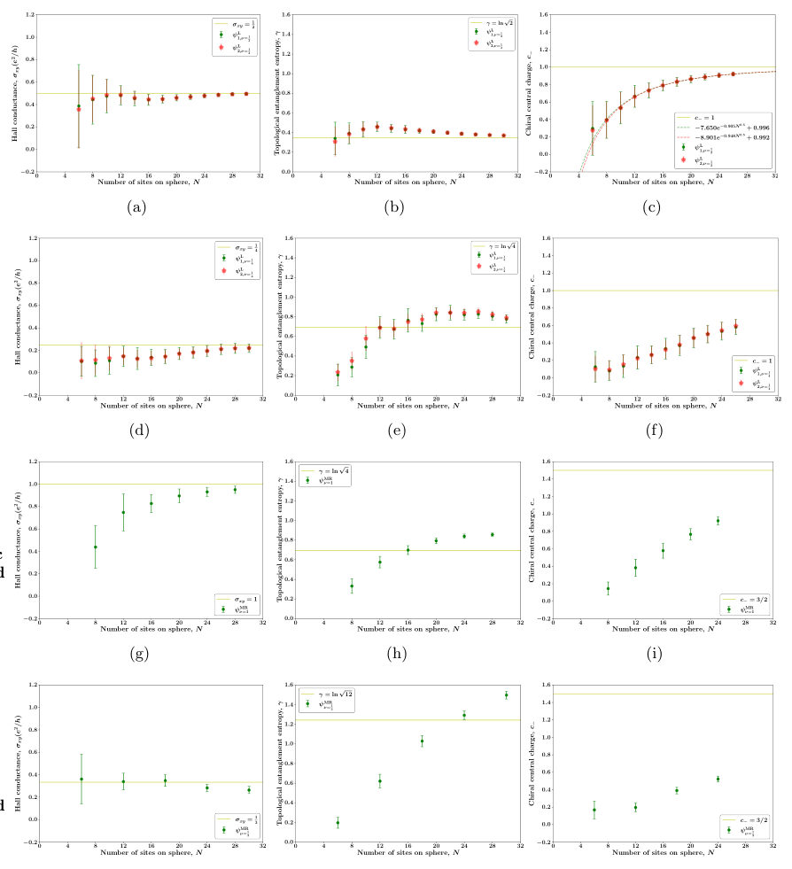
Main problem. The study investigates the reliability and convergence of extracting topological quantities, such as Hall conductance and topological entanglement entropy, using methods based on the modular Hamiltonian.
Main result. The authors demonstrate that while topological quantum numbers converge to their expected values, the convergence is significantly slower for states with longer correlation lengths and requires large system sizes to avoid large errors.
Method. The researchers use numerical techniques including Singular Value Decomposition (SVD) for Schmidt decomposition and finite-size scaling analysis to extrapolate results to the thermodynamic limit.
Summary. This paper tests how accurately topological properties can be extracted from a wavefunction using the modular Hamiltonian. By studying bosonic Laughlin and Moore-Read states on a lattice, the authors show that while the method works, the accuracy is highly sensitive to system size and correlation length. They find that larger systems are necessary to achieve reliable results, especially for states with complex topological structures like the Moore-Read state.
Model / system. The study focuses on lattice models of bosonic fractional quantum Hall states, specifically the Laughlin ($ u=1/2, 1/4$) and Moore-Read ($ u=1, 1/3$) wavefunctions, mapped onto a sphere.
Key observables. Hall conductance ($\sigma_{xy}$), topological entanglement entropy ($\gamma$), and chiral central charge ($c_-$).
Important parameters / regimes. Filling fractions ($ u$), system size ($N$), correlation length, and lattice spacing.
Assumptions / limitations. The system is assumed to be gapped and the topological content is assumed to be invariant under smooth deformations of the wavefunction.
Figures summary. Figure 1 shows the partitioning schemes for the modular Hamiltonian approach; Figure 2 illustrates the spherical lattice distribution; Figure 3 plots the evolution of topological observables as a function of system size $N$ with analytical fits.
Paper structure. The paper introduces the modular Hamiltonian approach, describes the lattice models and numerical implementation, presents the results for various topological quantities across different system sizes, and concludes with a discussion on convergence and finite-size effects.
Why it may be interesting. This work is relevant to many-body dynamics and theoretical physics as it provides critical bounds on the accuracy of using entanglement-based probes to identify topological order in large-scale quantum systems.
Topologically ordered states are characterized by topological quantities like the Hall conductance, topological entanglement entropy, and chiral central charge. Techniques based on the modular Hamiltonian have recently been developed to extract these quantities from a wavefunction. Here, we consider a lattice model of fractional quantum Hall states, a prototypical example of topologically ordered systems, and extract their topological content using the modular Hamiltonian-based methods. We consider the bosonic Laughlin and Moore-Read states and show that the extracted topological quantum numbers converge to their expected results. As expected, the convergence is slower when the correlation length of the state is longer. Generally, our results show that a reliable extraction of topological content through modular methods requires the usage of large systems
Authors: Amit Kam, Charles Roques-Carmes, Shai Tsesses, Aviv Karnieli
Type: both · Category: quantum information and computing · PDF: https://arxiv.org/pdf/2604.23571v1
Analysis basis: full PDF text, analyzed in chunks
Topic relevance: entanglement & information structure 3/5 · exotic spin models in light-matter 3/5 · QC/QI experiment 2/5 · analog quantum simulation 2/5 · interference shaping light 2/5 · methods for driven-dissipative 2/5 · quantum optics experiment 2/5
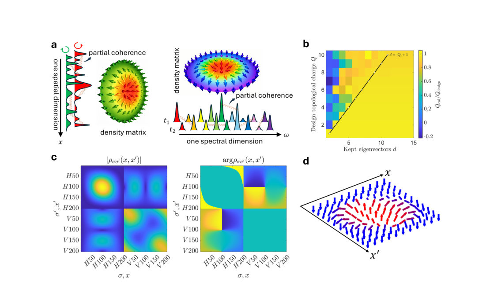
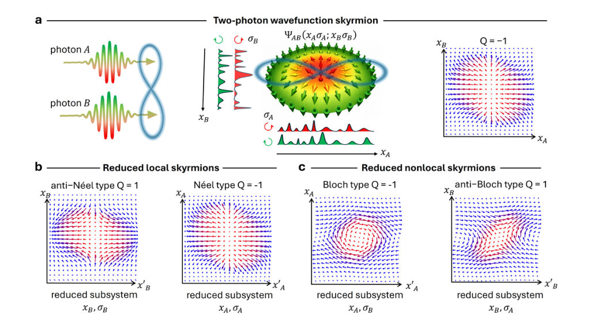
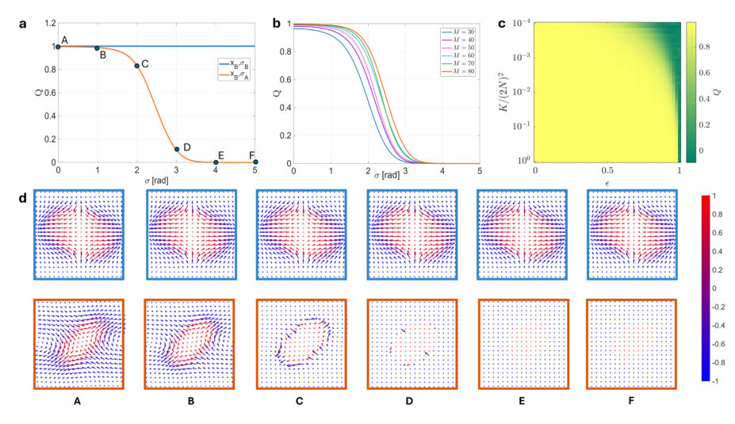
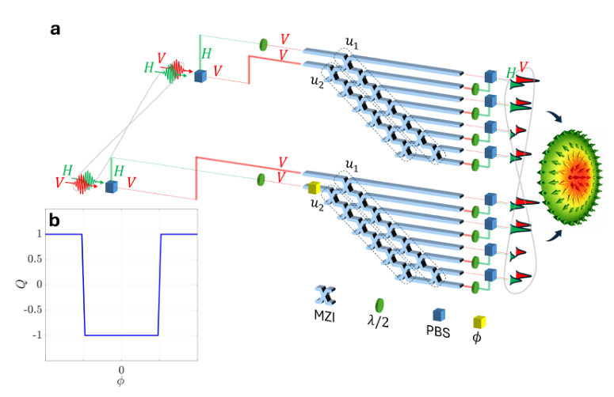
Main problem. Extending the realization of optical skyrmions from pure quantum states to mixed quantum states and investigating the robustness and 'nested' nature of topological charges in bipartite and multi-photon systems.
Main result. The authors demonstrate that skyrmionic topology can emerge in the density matrix of mixed states, can be realized in reduced 1D dimensions, and exhibits a 'nested' structure where topological charges persist across various reduced subspaces and are robust to environmental noise.
Method. The study uses a mathematical framework involving a coherence-Stokes vector derived from the density matrix, a sparse representation technique for constructing valid PSD matrices, and numerical simulations of noise channels (dephasing, depolarization, and additive noise).
Summary. This paper explores how topological quasiparticles known as skyrmions can exist within mixed quantum states rather than just pure states. The authors show that these skyrmions can be 'nested,' meaning their topological properties persist across different parts of an entangled multi-photon system. They also demonstrate that these structures are remarkably robust against environmental noise like dephasing and depolarization. Finally, they propose a practical way to create and measure these states using integrated photonic circuits, which could lead to new methods for robust information encoding.
Model / system. The physical systems include single-photon states with polarization and 1D spatial/synthetic modes, bipartite entangled photon pairs (Bell states), and N-photon multi-photon mixed states, with a proposed experimental implementation using integrated photonic MZI meshes.
Key observables. Topological charge (skyrmion number Q), coherence-Stokes vector texture, and the presence of line defects.
Important parameters / regimes. Number of eigenvectors (rank d), number of modes (M), dephasing strength, mixing probability, and relative phase (phi).
Assumptions / limitations. The framework assumes the ability to engineer specific density matrix elements and relies on the availability of programmable photonic networks for implementation.
Figures summary. Figure 1 illustrates skyrmions in 1D partially coherent light and the effect of rank on the skyrmion number; Figure 4 shows the experimental concept using MZI meshes and the topological switching of Q as a function of phase.
Paper structure. The paper introduces the concept of skyrmions in mixed states, develops the mathematical framework for 1D and 2D textures, analyzes bipartite and multi-photon nested topologies, tests robustness against various noise models, and concludes with an experimental implementation proposal.
Why it may be interesting. It is highly relevant for quantum optics and open quantum systems as it shows how topological protection can be maintained in noisy, mixed-state regimes and introduces a new way to encode information using the density matrix itself.
Topological quasiparticles of light, such as classical and quantum optical skyrmions, have so far relied on fully coherent or pure quantum states whose topology is encoded in the entanglement between polarization and two-dimensional spatial modes. Here we show that skyrmionic topology can emerge directly within the density matrix of a mixed quantum state. We introduce a framework in which a coherence-Stokes vector defines a topological texture over the density matrix, enabling the realization of quantum skyrmions using only a pseudospin and a real or synthetic one-dimensional space of modes. For a single photon, the density matrix is analogous to the coherence matrix of classical light, and can be encoded using partially coherent electromagnetic fields. We further analyze the topological texture encoded in a bipartite entangled photon pair, showing how skyrmions arise not only in the full bi-photon system, but also in its reduced subspaces with any pseudospin-mode combination simultaneously. We then explore the robustness of such skyrmions to environmental noise, and discover their persistence in mixed-quantum states of multiple photons. Finally, we propose a feasible experimental route to generate and measure such skyrmions using integrated photonic networks, and suggest avenues for similar implementations in other quantum systems. Our work paves the way for robustly encoding classical information on partially coherent light or on mixed quantum states and for encoding topological charges on many-body quantum systems.
Authors: Takahisa Harayama
Type: both · Category: other · PDF: https://arxiv.org/pdf/2604.23614v1
Analysis basis: full PDF text, analyzed in chunks
Topic relevance: interference shaping light 3/5 · driven-dissipative phase transition 2/5 · methods for driven-dissipative 2/5 · non-equilibrium dynamics 2/5 · non-equilibrium universality 2/5
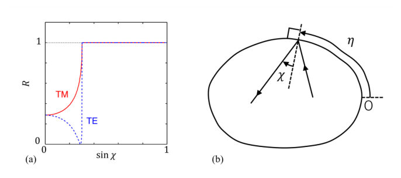
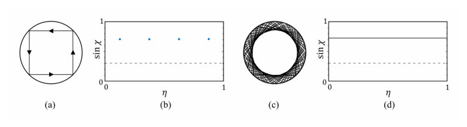
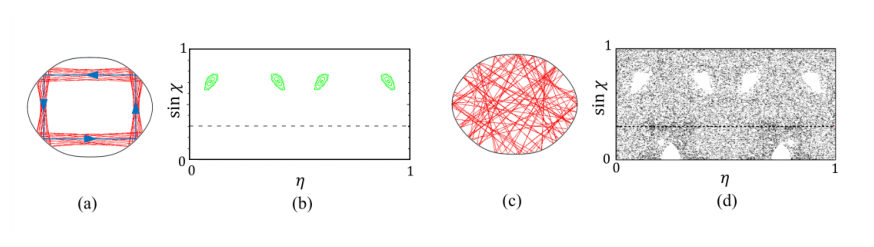
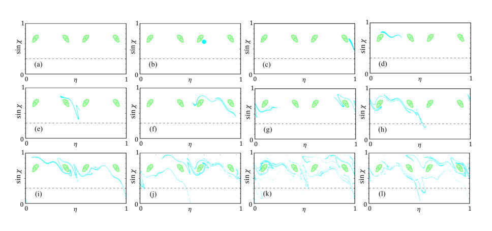
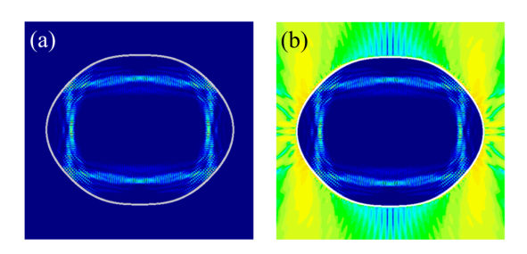
Main problem. Understanding how the transition from regular to chaotic ray dynamics affects the wavefunctions, lasing properties, and directional light emission in optical microcavity lasers.
Main result. The paper demonstrates that chaotic dynamics can be harnessed for controllable, directional light emission via chaos-assisted tunneling and that nonlinear interactions in the gain medium lead to phenomena like universal single-mode lasing.
Method. The study employs a combination of classical ray dynamics (Birkhoff coordinates), wave-based numerical methods (FDTD, BEM, and Helmholtz equation), and nonlinear modeling using the Maxwell-Bloch equations.
Summary. This paper reviews the physics of chaotic billiard lasers, focusing on how breaking the symmetry of a cavity can transform isotropic emission into directional light. It explores the bridge between classical ray chaos and wave-based nonlinear lasing, specifically through mechanisms like chaos-assisted tunneling and dynamical eclipsing. By deriving the Maxwell-Bloch equations for these systems, the author shows how the gain medium interacts with chaotic wavefunctions to stabilize single-mode lasing. Ultimately, it highlights the potential of using chaotic dynamics to engineer next-generation, unconventional coherent light sources.
Model / system. The physical system consists of 2D optical microcavity lasers (e.g., Bunimovich stadium or deformed droplets) with an active gain medium, modeled using non-Hermitian wave dynamics and nonlinear light-matter interaction.
Key observables. Quality (Q) factors, far-field and near-field emission patterns, complex eigenfrequencies, frequency pulling, and spatial intensity distributions.
Important parameters / regimes. Refractive index contrast (e.g., n_in=3.3, n_out=1), critical angle for total internal reflection, deformation parameters (a, b, c), and the transition from linear to nonlinear regimes.
Assumptions / limitations. The study primarily focuses on two-dimensional microcavity lasers and assumes the dielectric material has strictly vertical boundaries along the z-axis.
Figures summary. Figures illustrate reflectance vs. incident angle, ray orbits in Birkhoff coordinates, the evolution of intensity from Gaussian packets to stationary lasing states, and the distribution of passive resonances in the complex frequency plane.
Paper structure. The paper progresses from the fundamentals of classical and quantum chaos in optical billiards to the specific mechanisms of chaos-assisted light emission, followed by a rigorous derivation of nonlinear Maxwell-Bloch equations and an exploration of mode competition and stability in fully chaotic systems.
Why it may be interesting. It provides deep insights into non-Hermitian physics, the interplay between wave chaos and nonlinear dissipation, and the control of light-matter interactions in open quantum systems.
This chapter provides an overview of chaotic billiard lasers as a prominent branch of quantum chaos. These lasers offer an ideal experimental platform for demonstrating the principles of quantum chaos within a physical system. We begin by introducing the fundamental principles of chaotic ray dynamics in optical microcavities, where the transition from regular to fully chaotic dynamics fundamentally alters the underlying wavefunctions and lasing properties. A central focus is placed on "chaos-assisted light emission," which serves as a practical manifestation of "chaos-assisted tunneling" -- a hallmark phenomenon in the study of quantum chaos. We discuss both theoretical frameworks and experimental validations, demonstrating how chaotic orbits facilitate the coupling between evanescently localized modes and far-field emission. Furthermore, exploring how the presence of a gain medium influences established results from quantum chaos research remains a fundamental and intriguing problem in physics. To address this, we establish a rigorous and comprehensive derivation of the Maxwell-Bloch equations for two-dimensional microcavity lasers, specifically examining their application to fully chaotic, stadium-shaped billiard lasers. By bridging the gap between nonlinear lasing processes and chaotic wavefunctions, this chapter highlights the unique potential of chaotic billiards for controlling light-matter interactions and shaping the next generation of unconventional coherent light sources.
Authors: Sébastien Lucas, Christian Miniatura, Sergey E. Skipetrov
Type: theory · Category: disordered systems and neural networks · PDF: https://arxiv.org/pdf/2604.22919v1
Analysis basis: full PDF text, analyzed in chunks
Topic relevance: correlated / nonlocal dissipation 3/5 · driven-dissipative phase transition 3/5 · non-equilibrium universality 3/5 · free-space correlated emission 2/5
Main problem. The paper investigates whether a localization-delocalization transition can occur in a 2D system of light-scattering atoms, challenging the established belief that any amount of disorder in 2D leads to Anderson localization.
Main result. The authors predict a transition from Anderson localization to a delocalized regime driven by near-field dipole-dipole interactions as the atomic density increases, with an estimated critical exponent of nu = 1.4 +/- 0.2.
Method. The study uses numerical analysis of the eigenvalues and quasi-normal modes of an effective non-Hermitian Hamiltonian, combined with finite-size scaling and multifractal analysis.
Summary. This paper demonstrates that light in a 2D waveguide can undergo a localization-delocalization transition. While standard 2D scaling theory predicts that any disorder causes Anderson localization, the authors show that increasing the density of atoms triggers a transition to an extended regime. This transition is driven by strong near-field dipole-dipole interactions. The study provides a critical exponent for this transition and distinguishes between localized modes and subradiant atom pairs.
Model / system. A 2D planar waveguide formed by two parallel reflecting plates containing an ensemble of N identical two-level atoms randomly distributed in the middle plane, interacting via electromagnetic Green's functions.
Key observables. Decay rates (Gamma), Thouless conductance (g), Inverse Participation Ratio (IPR), and multifractal dimensions (Dq).
Important parameters / regimes. Atomic areal number density (rho/k0^2), waveguide width (d), and frequency detuning.
Assumptions / limitations. The system is modeled using an effective non-Hermitian Hamiltonian; the scaling theory assumes single-parameter scaling holds near the critical line.
Figures summary. Figure 1 shows the waveguide geometry; Figure 2 compares decay rates in the waveguide vs 2D models to show the transition; Figure 3 and others show IPR and conductance scaling behavior.
Paper structure. The paper introduces the problem of 2D localization, describes the waveguide model and Green's function, presents numerical results for decay rates and conductance, performs finite-size scaling to find the critical exponent, and discusses the fractal nature of the modes.
Why it may be interesting. It challenges a fundamental tenet of 2D wave physics (that all disorder leads to localization) by showing how many-body-like dipole interactions can drive a phase transition to a delocalized state.
Common belief, confirmed by existing experiments, is that arbitrarily weak disorder should lead to spatial localization of eigenmodes of scalar wave equations when wave propagation is two-dimensional (2D). We predict that contrary to this belief, a localization-delocalization transition can take place for light scattered by two-level atoms placed at random positions in the middle plane of a parallel-plate 2D waveguide fed by its fundamental transverse-magnetic (TM) mode (electric field polarized perpendicular to the waveguide and atomic planes). This transition, driven by near-field dipole-dipole interactions between atoms, occurs upon increasing the areal number density of atoms beyond some critical value. A finite-size scaling analysis of the transition yields an estimate of its critical exponent $ν$ = 1.4 $\pm$ 0.2.
Authors: José J. Gil
Type: theory · Category: quantum information and computing · PDF: https://arxiv.org/pdf/2604.23304v1
Analysis basis: full PDF text, analyzed in chunks
Topic relevance: methods for driven-dissipative 3/5 · correlated / nonlocal dissipation 2/5 · entanglement & information structure 2/5 · non-equilibrium dynamics 2/5 · quantum measurements 2/5
Main problem. The paper addresses the problem of identifying a canonical, model-independent pointer basis and quantifying the emergence of classicality from quantum dynamics when the microscopic system-environment coupling is unknown.
Main result. The author proves that an Intrinsic Reference Basis (IRB) emerges as a dynamically stable pointer sector under IRB-selective dynamics, providing a state-dependent criterion for classicality via a cohesion index.
Method. The study uses a mathematical framework involving an antiunitary involution (K) to decompose the density operator into population and coherence sectors, employing Lyapunov analysis and majorization theory to prove monotonic coherence decay.
Summary. This paper proposes a new framework for understanding the quantum-to-classical transition by defining a basis (the IRB) directly from the state's own structure. It shows that for certain types of noise, quantum coherences decay predictably, leading to an irreversible emergence of classical behavior. The approach is unique because it does not require knowing the specific details of the environment. Crucially, the paper links this theoretical decay to measurable quantities like fringe visibility in interferometry, making the theory directly testable.
Model / system. The framework applies to reduced quantum descriptions of open systems undergoing Markovian GKSL (Lindblad) dynamics, specifically focusing on the 'IRB-selective' regime where Lindblad operators are diagonal in the intrinsic basis.
Key observables. Cohesion index (Pc), fringe visibility (V), quadratic intrinsic coherence (U), and the thermodynamic arrow-of-time proxy (A_lambda).
Important parameters / regimes. Classicalization time (t_cl), minimum dephasing rate (Gamma_min), and experimental resolution/tolerance (epsilon).
Assumptions / limitations. Assumes IRB-selective dynamics (Lindblad operators are diagonal in the IRB) and requires a fixed physical conjugation K determined by symmetry or measurement convention.
Figures summary. The notes mention Figure 2(a) but do not provide a full description of the figure contents.
Paper structure. The paper defines the IRB decomposition, proves coherence contraction under specific dynamics, derives operational classicality criteria and timescales, and connects these results to experimental interferometric measurements.
Why it may be interesting. It provides a powerful, model-independent way to certify classicality and identify pointer states directly from experimental data (like tomography), which is highly relevant for characterizing noise and decoherence in qubits and other open quantum systems.
The irreversible emergence of classical behavior from a reduced quantum description via a canonical intrinsic decomposition of the density operator is analyzed. In the intrinsic reference basis (IRB), defined for a fixed physical conjugation K (determined by measurement convention, system symmetry, or secular approximation) by diagonalizing the real symmetric part of the state, the density operator separates into a diagonal population sector and a real antisymmetric coherence sector. For the class of Markovian open-system dynamics whose Lindblad operators are diagonal in the IRB, we prove that the quadratic coherence functional is a Lyapunov functional under pure-dephasing or interaction-picture evolution, with each intrinsic coherence component decaying exponentially at a computable rate. This yields a canonical state-dependent operational classicality criterion via the normalized cohesion index, an explicit logarithmic classicalization time controlled by the slowest dephasing rate, and a demonstration that the IRB projectors emerge as dynamically stable pointer sectors under IRB-selective evolution. Suppression of intrinsic coherences is exactly equivalent to suppression of fringe visibility in the corresponding interferometric sector; for a balanced two-path setup the cohesion index coincides with the fringe visibility, making the classicality criterion directly testable with standard interferometric equipment. The approach complements environment-induced einselection: it is applicable whenever a coarse-grained reduced description is available, independently of whether the microscopic system-environment coupling is known.
Authors: Stephen Wiggins
Type: theory · Category: quantum information and computing · PDF: https://arxiv.org/pdf/2604.24042v1
Analysis basis: full PDF text, analyzed in chunks
Topic relevance: driven-dissipative phase transition 3/5 · methods for driven-dissipative 3/5 · non-equilibrium dynamics 3/5 · Keldysh / 2PI / non-Gaussian methods 2/5
Main problem. The inadequacy of autonomous, 'frozen-time' approximations for describing the operational dynamics, state preparation, and gate-induced leakage in nonautonomous Kerr-cat qubits.
Main result. The paper identifies a nonautonomous pitchfork bifurcation for state preparation and uses Melnikov theory to derive a geometric threshold for gate-induced non-adiabatic transport (leakage) via transient lobe dynamics.
Method. The author employs nonautonomous dynamical systems theory, including local invariant-graph reduction, Melnikov's method for manifold splitting, and semiclassical expansion.
Summary. This paper investigates the dynamics of Kerr-cat qubits under time-dependent microwave control. It demonstrates that standard static models fail to capture the true physics of state preparation and gate execution. By using nonautonomous dynamical systems theory, the author shows that state formation follows a nonautonomous pitchfork bifurcation and that fast gates induce leakage through a 'turnstile' mechanism of transient lobes. This provides a predictive geometric criterion for the onset of bit-flip errors during gate operations.
Model / system. A driven-dissipative, nonautonomous Kerr-nonlinear parametric oscillator (KPO) modeled as a 2D planar vector field representing a superconducting nonlinear resonator.
Key observables. Phase-space trajectories (x, y coordinates), Melnikov function (M(t0)), transport threshold (A_crit), and dynamic lag between physical trajectories and algebraic roots.
Important parameters / regimes. Kerr nonlinearity (K), dissipation rate (kappa), detuning (Delta), pump amplitude (p(t)), ramp rate (gamma), gate pulse amplitude (A), and pulse width (sigma).
Assumptions / limitations. The analysis relies on a semiclassical expansion in the large photon-number limit and treats gate pulses as weak aperiodic perturbations of a conservative Hamiltonian skeleton.
Figures summary. Figure 2 shows the reduced scalar model's moving branches and the 2D phase-twist relaxation; Figure 3 illustrates the Melnikov splitting distance; Figure 4 presents the transport threshold in the amplitude-width plane; Appendix figures show dynamic lag and the formation of the homoclinic tangle.
Paper structure. The paper first establishes the Hamiltonian skeleton, then analyzes state preparation via invariant-graph reduction to find the nonautonomous pitchfork mechanism, followed by an analysis of gate execution using Melnikov theory to predict leakage, and concludes with numerical validation of the transport threshold.
Why it may be interesting. It provides a rigorous geometric framework for understanding how time-dependent control pulses in continuous-variable hardware drive non-adiabatic errors and phase-space transport, which is critical for designing high-fidelity gates in cat-state qubits.
The Kerr-nonlinear parametric oscillator (KPO) provides a foundational semiclassical model for cat-state quantum hardware. Standard analyses of the KPO typically rely on autonomous, frozen-time approximations to describe the stabilization of macroscopic coherent states. However, state preparation and gate manipulation are driven by explicitly time-dependent microwave pulses, so the operational dynamics are inherently nonautonomous. In this paper, we show that static algebraic equilibrium pictures are incomplete for describing both state formation and gate-induced transport in the Kerr-cat qubit. For nonautonomous state preparation, we analyze the ramped resonant model by combining a linear nonautonomous stability analysis with a local invariant-graph reduction near the vacuum trajectory. This yields a quintic reduced normal form in the critical direction and identifies two symmetric post-threshold moving branches that organize the local state-formation dynamics. The associated diagnostics separate the reduced branch dynamics from the full two-dimensional phase-twist relaxation observed in the hardware coordinates. For gate execution, we model a fast pulse as a weak aperiodic perturbation of the conservative resonant figure-eight separatrix and apply Melnikov's method to derive a leading-order transport criterion. In this framework, transient lobe dynamics emerge as a semiclassical mechanism for non-adiabatic leakage, and the resulting amplitude-width threshold curve provides a leading-order geometric indicator for the onset of gate-pulse-induced transport.
Authors: Yujian Yuan, Jie Liu, He Gao, Jiamin Guo, Zhongming Gu, Jie Zhu
Type: both · Category: disordered systems and neural networks · PDF: https://arxiv.org/pdf/2604.23713v1
Analysis basis: full PDF text, analyzed in chunks
Topic relevance: non-equilibrium dynamics 3/5 · analog quantum simulation 2/5 · correlated / nonlocal dissipation 2/5 · driven-dissipative phase transition 2/5 · non-equilibrium universality 2/5

Main problem. The study investigates the Erratic Non-Hermitian Skin Effect (ENHSE), where disorder and local nonreciprocity cause wave functions to form discrete bulk peaks rather than accumulating at boundaries.
Main result. The researchers experimentally observed that bulk localization peaks in a phononic crystal correspond to the local maxima of a cumulative gauge field, following random-walk extreme-value statistics, and demonstrated the ability to steer these peaks via sublattice tuning.
Method. The work combines experimental measurements of acoustic pressure in a 1D phononic crystal with large-scale numerical simulations using the Crank-Nicolson method and random-walk statistical analysis.
Summary. This paper reports the experimental observation of the Erratic Non-Hermitian Skin Effect in a phononic crystal. Unlike the standard non-Hermitian skin effect which pushes energy to the edges, this effect creates localized peaks within the bulk of the system. These peaks are determined by the extreme values of a random-walk-like gauge field created by disordered nonreciprocal couplings. The authors also show that these peaks can be deterministically manipulated by tuning the disorder in a dimerized lattice structure.
Model / system. A 1D phononic crystal consisting of resonant cavities and tubes, implementing a disordered Hatano-Nelson model and a dimerized Su-Schellig-Heeger (SSH) model with nonreciprocal couplings via an electronic amplifier circuit.
Key observables. Spatial eigenstate distribution, acoustic pressure profiles, real-space winding number, and cumulative gauge field trajectories.
Important parameters / regimes. Disorder strength (delta h), mean bias (h-bar), lattice size (N), and the probability of positive/negative coupling (b1, b2).
Assumptions / limitations. The study focuses on the weak-bias regime where the average non-reciprocity vanishes (h-bar = 0).
Figures summary. Figure 1 shows the Hatano-Nelson model and the correspondence between random-walk distributions and eigenstate peaks; Figure 4 illustrates the nonreciprocal SSH model, winding numbers, and the spatial alignment of acoustic pressure with random-walk trajectories.
Paper structure. The paper introduces the ENHSE concept, describes the experimental phononic platform and nonreciprocal mechanism, presents numerical validation of the localization mechanism via extreme-value statistics, and concludes with the demonstration of sublattice-specific wave control.
Why it may be interesting. This work is highly relevant for researchers in open quantum systems and many-body dynamics as it demonstrates a new regime of non-Hermitian localization driven by stochastic fluctuations rather than global topology, offering a method for disorder-engineered wave control.
The erratic non-Hermitian skin effect (ENHSE), emerging from the interplay between disorders and locally nonreciprocal yet globally reciprocal couplings, has reshaped the conventional bulk-boundary correspondence through its disorder-dependent localization properties. Here, we experimentally observe the dynamical phenomena of ENHSE in phononic crystals with disordered imaginary gauge fields. The erratic localization occurs in the bulk independent of the excitation position, with the main and satellite peaks precisely located at the local maxima of the cumulative gauge field in accordance with random-walk extreme-value statistics. Remarkably, the selective manipulation of satellite peaks can be realized by tuning the staggered disorder strengths in a dimerized chain. These findings can deepen the understanding of non-Hermitian physics and establish a new route for disorder-engineered non-Hermitian wave control.
Authors: Luca Barbieri, Pierfrancesco Di Cintio
Type: theory · Category: statistical mechanics · PDF: https://arxiv.org/pdf/2604.24592v1
Analysis basis: full PDF text, analyzed in chunks
Topic relevance: non-equilibrium dynamics 3/5 · driven-dissipative phase transition 2/5 · methods for driven-dissipative 2/5 · non-equilibrium universality 2/5 · scars & prethermalization 1/5
Main problem. The lack of a general theoretical framework to predict the stationary distribution function and macroscopic profiles of collisionless systems coupled to boundary reservoirs with various injection rules.
Main result. The authors derive an analytical expression for the stationary distribution function, proving that thermal equilibrium is only recovered for standard flux-weighted Maxwellian injection (n=1), while other rules lead to non-thermal states with non-trivial spatial structures.
Method. The study combines Jeans' theorem (Liouville's theorem) with boundary injection rules to derive analytical solutions, which are validated using N-particle numerical simulations with a fourth-order symplectic integrator.
Summary. This paper presents a new technique to study the stationary states of collisionless systems connected to boundary reservoirs. By generalizing the boundary injection rules using a parameter n, the authors show that only one specific rule leads to standard thermal equilibrium. Other injection rules produce non-thermal stationary states characterized by unexpected spatial structures like temperature gradients and non-monotonic density profiles. The analytical results are confirmed through particle-based numerical simulations.
Model / system. A one-dimensional, collisionless, non-interacting system of particles confined within a finite domain by an external potential U(q), where particles are reinjected at the boundaries according to a family of distributions parameterized by an integer n.
Key observables. Stationary distribution function f(q, p), number density profiles n(q), kinetic temperature profiles T(q), and stationary moments.
Important parameters / regimes. The integer parameter n (defining the injection rule), temperature T, and the external potential U(q).
Assumptions / limitations. The system is assumed to be collisionless, non-interacting, and one-dimensional.
Figures summary. Figure 1 shows the time evolution of kinetic energy and stationary density/temperature profiles for n=0; Figure 2 shows the thermal equilibrium case for n=1; Figure 3 shows non-monotonic density and decreasing temperature profiles for n=3.
Paper structure. The paper introduces the problem of boundary-driven stationary states, defines the generalized injection model, provides the analytical derivation of the distribution function using Jeans' theorem, presents numerical validation for specific cases (n=0, 1, 3), and discusses the broader implications for kinetic models.
Why it may be interesting. This work is highly relevant to open quantum systems and many-body dynamics as it provides a rigorous framework for understanding how microscopic boundary driving/injection rules directly dictate the emergence of non-equilibrium steady states and non-thermal macroscopic profiles.
We present a technique to investigate the stationary states of a system of a collisionless system confined by an external potential and coupled to boundary reservoirs through prescribed reinjection rules. We consider a family of boundary conditions parametrized by an integer $n$, corresponding to different velocity distributions imposed at the boundaries, generalizing the standard flux-weighted Maxwellian scheme. By combining Liouville's theorem with the boundary injection rule, we derive an explicit analytical expression for the stationary distribution function. This framework provides a direct link between microscopic boundary dynamics and macroscopic stationary profiles. We show that thermal equilibrium is recovered only for the standard flux-weighted injection method, while for all other cases the system relaxes to manifestly non-thermal stationary states. The resulting density and temperature profiles exhibit non-trivial spatial structures, including non-monotonic behaviour and temperature gradients induced by the boundary conditions alone. Analytical predictions for stationary moments are obtained in closed form for representative cases and are nicely reproduced by particle-based numerical simulations.
Authors: Y. S. Liu, X. Z. Zhang
Type: theory · Category: disordered systems and neural networks · PDF: https://arxiv.org/pdf/2604.23672v1
Analysis basis: full PDF text, analyzed in chunks
Topic relevance: entanglement & information structure 3/5 · non-equilibrium dynamics 3/5 · driven-dissipative phase transition 2/5 · methods for driven-dissipative 2/5
Main problem. The study investigates how graded hopping (position-dependent hopping) screens nonreciprocity and reorganizes the localization landscape and asymptotic behavior in a non-Hermitian Stark chain.
Main result. Graded hopping transforms the exponential non-Hermitian skin effect into a weaker algebraic boundary accumulation and identifies a critical threshold at |F1| = 2|F2| that regulates the transition between oscillatory and Stark-localized regimes.
Method. The authors use an exact diagonal similarity transformation to remove bond asymmetry, asymptotic analysis of recurrence relations, and a QR-stabilized numerical approach for simulating non-unitary many-body dynamics.
Summary. This paper explores a 1D non-Hermitian chain where hopping strength increases with position. The researchers show that this graded hopping suppresses the typical exponential skin effect, replacing it with a power-law accumulation at the boundaries. They identify a specific threshold in the field strength where the system transitions between oscillatory and exponentially localized states. Furthermore, they demonstrate that this threshold also acts as a point of enhanced entanglement growth during many-body dynamics.
Model / system. A one-dimensional, open-boundary, non-Hermitian quadratic Hamiltonian (Stark chain) featuring nonreciprocal hopping, a linear potential (Stark field), and linearly graded hopping.
Key observables. Edge polarization, Inverse Participation Ratio (IPR), half-chain entanglement entropy, and center of mass.
Important parameters / regimes. Nonreciprocity strength (gamma), Stark slope (F1), hopping gradient (F2), and the critical threshold |F1| = 2|F2|.
Assumptions / limitations. The system is assumed to be a quadratic (single-particle) fermionic model, and the orbital matrix must maintain full rank for the correlation matrix to be well-defined.
Figures summary. A joint localization map in the (gamma, F1/F2) plane showing edge polarization and IPR with specific line cuts to demonstrate phase transitions.
Paper structure. The paper begins by defining the non-Hermitian Stark chain model, applies a similarity transformation to analyze the asymptotic behavior of eigenstates, maps the localization regimes using one-body observables, and concludes with a many-body study of entanglement growth during a charge-density-wave quench.
Why it may be interesting. It provides a controlled mechanism for screening nonreciprocity and reveals how non-Hermitian skin effects can be 'softened' into algebraic forms, which is highly relevant for understanding transport and entanglement in non-unitary many-body dynamics.
We study a one-dimensional non-Hermitian Stark chain in which nonreciprocal hopping, a linear potential, and linearly graded hopping act simultaneously. The central question is how boundary pumping and field-induced confinement are reorganized when the hopping amplitude itself grows with position. We show that the graded term separates the two localization channels at the level of the large-position asymptotics. An exact diagonal similarity transformation removes the bond asymmetry and converts the usual exponential skin factor into an algebraic boundary accumulation with exponent $η=γ/F_2$. The transformed symmetric chain then reduces asymptotically to a constant-coefficient recurrence, giving the Stark threshold $|F_1|=2|F_2|$. The original right eigenstates acquire the unified envelope $ψ_j^R\sim j^ηφ_j$, with oscillatory, double-root, and exponentially localized branches across the threshold. This form also yields two finite-size scales, one measuring the logarithmic screening of nonreciprocity and the other balancing the algebraic skin factor against the exponential Stark tail. A joint localization map in the $(γ,F_1/F_2)$ plane verifies this structure. The edge polarization bends near the Stark threshold and weakens on the localized side, while the inverse participation ratio of the most localized eigenstates rises rapidly for $F_1/F_2>2$. Using a normalized Gaussian projector appropriate for non-unitary evolution, we further show that the same threshold enhances half-chain entanglement growth after a charge-density-wave quench. These results identify graded hopping as a controlled mechanism for screening nonreciprocity, resetting Stark asymptotics, and organizing the finite-size crossover between algebraic skin accumulation and Stark localization.
Authors: Kai Liu, Deguang Han, Omar Nour
Type: theory · Category: quantum information and computing · PDF: https://arxiv.org/pdf/2604.24363v1
Analysis basis: full PDF text, analyzed in chunks
Topic relevance: quantum measurements 3/5 · entanglement & information structure 2/5 · interference shaping light 2/5 · methods for driven-dissipative 2/5
Main problem. The paper investigates the conditions for phase retrievability of quantum channels and explores whether interferometric coupling can enhance the ability to reconstruct pure input states.
Main result. The authors prove that a channel is phase retrievable if and only if its complementary channel is pure-state informationally complete, and demonstrate that coherent interferometric coupling can enable phase retrieval even when individual arm channels are not phase retrievable.
Method. The study utilizes quantum information theory (Stinespring dilation, complementary channels), frame theory (operator-valued Parseval frames), and algebraic analysis of Kraus operators.
Summary. This paper addresses the problem of phase retrievability in quantum channels, which is the ability to reconstruct pure input states from measurement data. The authors establish a fundamental link between a channel's phase retrievability and the informational completeness of its complementary channel. They propose that using a quantum interferometer to coherently combine two channels can create interference cross-terms that enhance retrievability. This mechanism allows for state reconstruction even when the individual channels used in the interferometer are not themselves phase retrievable.
Model / system. A two-arm quantum interferometer where two quantum channels are coherently recombined via port operators M_i(theta) = A_i + e^{i*theta}B_i, representing a Mach-Zehnder type setup.
Key observables. Phase retrievability index (pr), injectivity indices (I and I_av), and the dimension of the complementary operator system.
Important parameters / regimes. Interferometric phase (theta), damping parameter (gamma), rotation angle (alpha), and the dimension of the Hilbert space (d).
Assumptions / limitations. The analysis assumes finite-dimensional complex Hilbert spaces and focuses primarily on the reconstruction of pure states rather than mixed states.
Figures summary. Schematic of a two-path interferometer and heat maps showing the injectivity index and average CP injectivity as functions of phase and rotation parameters.
Paper structure. The paper begins with a structural characterization of phase retrievability via complementary channels, moves to the introduction of the interferometric coupling model, applies frame theory to analyze the enhancement mechanism, and concludes with specific examples and quantitative injectivity analysis.
Why it may be interesting. This work is highly relevant to quantum optics and open quantum systems as it provides a fundamental framework for using coherent interference to recover information that is otherwise lost to the environment.
Phase retrievability of a quantum channel asks whether pure states can be reconstructed from suitable measurements. In this paper, we study this problem from three complementary viewpoints: quantum information theory, operator-valued frames, and the physical realization through quantum interferometry. We first show that a quantum channel is phase retrievable if and only if its complementary channel is pure-state informationally complete. This structural characterization leads to several consequences for phase retrievability, including criteria involving the dimension of the complementary operator system, Choi-rank type bounds, and specific results for entanglement breaking channels and twirling channels. We then introduce an interferometric coupling in which two arm channels are coherently recombined through port operators \(M_i(θ)=A_i+e^{iθ}B_i\). Unlike classical mixing, this construction produces interference cross terms that can enlarge the complementary operator system and thereby enhance phase retrievability. From the frame theory viewpoint, the interferometer realizes a coherent coupling of operator-valued frames. To quantify this effect, we introduce injectivity indices for completely positive maps. The examples in Section~5 show that coherent interference can significantly improve phase retrieval behavior even when the arm channels are individually not phase retrievable.
Authors: Margherita Disertori, Yan V. Fyorodov
Type: theory · Category: disordered systems and neural networks · PDF: https://arxiv.org/pdf/2604.23708v1
Analysis basis: full PDF text, analyzed in chunks
Topic relevance: driven-dissipative phase transition 3/5 · methods for driven-dissipative 2/5 · non-equilibrium dynamics 2/5 · non-equilibrium universality 2/5
Main problem. The paper investigates the gradual ergodization of eigenvectors and the splitting of eigenvalue density support in a system of two coupled non-Hermitian random matrices.
Main result. The authors derive an explicit formula for the joint probability density of eigenvalues and eigenvectors at the spectral origin and identify a critical coupling strength where the spectral support splits into two disjoint domains.
Method. The study employs a non-perturbative approach using Grassmann (anticommuting) variables, the Hubbard-Stratonovich transformation, and the Laplace method for asymptotic analysis in the large N limit.
Summary. This paper studies how the interaction between two separate non-Hermitian quantum systems leads to the spreading of eigenvectors across the combined system. By using a model of two coupled Ginibre matrices, the authors provide an explicit mathematical description of the transition from a state where subsystems retain their identity to a fully ergodic state. They also show that at high coupling strengths, the eigenvalue distribution can split into two separate regions in the complex plane. This provides fundamental insights into the loss of subsystem identity in dissipative quantum chaos.
Model / system. A 2N x 2N non-Hermitian random matrix model consisting of two independent N x N complex Ginibre matrices coupled via a deterministic matrix c*1_N, representing interacting dissipative quantum chaotic systems.
Key observables. Squared norms of eigenvector components (p1, p2), joint probability density of eigenvalues and eigenvectors, and mean eigenvalue density.
Important parameters / regimes. Coupling strength |c|, matrix size N, and the scaling limit c = sqrt(N)*c_tilde.
Assumptions / limitations. The random matrix elements are assumed to be independent and normally distributed; the analysis focuses on the spectral origin (z=0) for mathematical tractability.
Paper structure. The paper introduces the model and the problem of eigenvector ergodization, presents a theorem for the joint probability density, provides a corollary for eigenvector norms, and concludes with a detailed mathematical appendix proving the asymptotic behavior of the integrals using the Laplace method.
Why it may be interesting. This work is highly relevant for researchers studying open quantum systems and many-body dynamics, as it provides a quantitative framework for understanding how interaction strength drives the transition from localized to ergodic states in dissipative chaotic systems like coupled SYK models.
Non-Hermitian random matrices provide a useful framework for understanding universal characteristics of dissipative quantum chaotic systems with loss or gain. We consider a model of two such system represented by two independent $N\times N$ complex Ginibre matrices interacting via a deterministic matrix $c{\bf 1}_N$, where $c$ is the complex coupling parameter whose magnitude $|c|$ controls the interaction strength. We characterize quantitatively how the eigenvectors of the whole system, initially localized in one of the individual subsystems for $|c|=0$, eventually spread over the full system with growing interaction strength. The resulting asymptotic formula describing such spread in the limit $N\to \infty$ is very explicit and provides a full picture of the gradual ergodization of eigenvectors as a function of the coupling parameter $|c|$ in the whole transition regime. As a by-product of our method we also compute the mean eigenvalue density for our model at the origin of the spectral bulk $z=0$ in the fully ergodic regime, when the coupling is scaled with the matrix size as $c=\sqrt{N}\tilde{c}$. We find that as $N\to \infty$ the limiting density at the origin vanishes beyond the critical value $|\tilde{c}|=1$, signalling of a split of the density support in the complex plane into two disjoint domains.
Authors: Masood Valipour, Gniewomir Sarbicki, Karolina Słowik, Anita Dąbrowska
Type: theory · Category: other · PDF: https://arxiv.org/pdf/2604.24560v1
Analysis basis: full PDF text, analyzed in chunks
Topic relevance: interference shaping light 3/5 · methods for driven-dissipative 2/5 · non-equilibrium dynamics 2/5 · quantum measurements 2/5
Main problem. Optimizing the two-photon excitation probability of a three-level ladder-type atom using indistinguishable photons and comparing this with experimentally accessible Gaussian and coherent states.
Main result. The authors identify an optimal two-photon state, which is the time-reversed counterpart of spontaneous cascade decay, capable of achieving perfect excitation in the limit of an infinitely long pulse. They also show that quantum interference in Gaussian pulses can shift spectral maxima away from atomic resonances.
Method. The study employs the Wigner-Weisskopf approximation, input-output formalism, and a quantum-trajectory/stochastic approach to solve the hierarchy of coupled differential equations for the atomic density matrix.
Summary. This paper investigates how to maximize the excitation of a three-level atom using pairs of indistinguishable photons. The authors find that the most efficient excitation occurs when the input light is the time-reversed version of the atom's own spontaneous decay process. By comparing this ideal state to practical Gaussian and coherent pulses, they demonstrate how quantum interference and photon correlations can be tuned to optimize light-matter interactions in quantum-optical interfaces.
Model / system. A three-level atom in a ladder configuration (|g>, |e>, |f>) interacting with a unidirectional, continuous-mode two-photon field. The dynamics are governed by a master equation within the Wigner-Weisskopf approximation.
Key observables. Population of the upper atomic state P_f(t), marginal probability densities in time and frequency domains, and average residence time in the final state.
Important parameters / regimes. Atomic decay rates (Gamma_e, Gamma_f), atomic transition frequency difference (delta_a), photon pulse widths, time delay (mu), and frequency offsets.
Assumptions / limitations. Rotating-wave approximation, Wigner-Weisskopf approximation, unidirectional field, and an initial ground state population.
Figures summary. Figures show the excitation probability and marginal distributions as functions of time and decay rate ratios; plots of optimized parameters (widths, delays, detunings) for various light states; and a comparison of excitation efficiency for coherent vs. two-photon states.
Paper structure. The paper begins with the analytical derivation of the optimal two-photon state, followed by an investigation of the spectral and temporal properties of this state. It then compares the ideal case to realistic Gaussian and coherent pulse models, analyzing the impact of decay rate ratios and detuning, and concludes with an appendix detailing the dynamical equations and optimized parameter landscapes.
Why it may be interesting. This work is highly relevant for quantum optics and open quantum systems as it provides fundamental guidance for designing efficient light-matter interfaces and explores how photon indistinguishability and quantum interference can be leveraged to control nonlinear atomic excitation.
We investigate the excitation of a three-level ladder-type atom by a unidirectional field with a pair of indistinguishable photons. Starting from an analytical expression for the two-photon absorption probability, we determine the two-photon state that maximizes the population of the upper atomic state at a chosen time and show that, in the limit of an infinitely long pulse, perfect excitation is possible. The optimal state is identified as the time-reversed counterpart of the two-photon state emitted in spontaneous cascade decay. We then compare this ideal excitation strategy with experimentally accessible families of states, including symmetrized Gaussian product states, temporally correlated Gaussian states, and coherent pulses. We analyze how the optimal excitation conditions depend on the ratio of atomic decay rates and on the separation of the atomic transition frequencies. For indistinguishable photons described by Gaussian pulses, quantum interference may shift the maxima of the marginal spectral distribution away from the atomic resonances and qualitatively modify the optimal excitation strategy. Our results clarify the role of indistinguishability and correlations in two-photon absorption and provide guidance for designing realistic excitation schemes in quantum-optical light-matter interfaces .